Supplementary material
Sensor noise, array design and helmet fit in on-scalp and cryogenic magnetoencephalography: a simulation study in adult and pediatric head models
S1. Estimands and conventions
We compared arrays of optically pumped magnetometers (OPMs) with the Neuromag magnetoencephalography (MEG) system of superconducting quantum interference devices (SQUIDs), by default all 306 of its channels. The primary metric is the known-topography detectability \(d\) (main text, Section 2.1), the output signal-to-noise ratio (SNR) of the optimal matched filter, computed with the true (oracle) noise covariance and rank-aware whitening for every target and array. Arrays were compared target by target through the paired ratio \(d_{\mathrm{OPM}}/d_{\mathrm{Neuromag}}\) or \(D = 20\log_{10}(d_{\mathrm{OPM}}/d_{\mathrm{Neuromag}})\), which is positive when the OPM array’s detectability is higher and does not depend on the dipole moment. The adult comparison reports the median of the paired ratio, not the ratio of the two systems’ median detectabilities.
The adult analyses use the unweighted median over all 7,661 targets, the 558 on the medial wall included. The smaller heads use an area-weighted median over cortical targets, medial wall excluded, because their cortices differ in size and their targets in density. At the adult’s measured head position, the dense array’s ratio is 1.144 unweighted over all targets, 1.148 without the medial wall and 1.158 area-weighted without it. Its \(D\) is +1.17 dB under the adult convention and +1.27 dB under the pediatric one. A 1 % change of the ratio is 0.086 dB, and 1 dB is a ratio of 1.122. Table S1 gives the adult’s primary comparison in both forms.
| Array and form | Sensor noise only | Sensor plus brain noise (primary) | Room field projected out |
|---|---|---|---|
| Dense, ratio | 0.742 [0.717, 0.768] | 1.144 [1.121, 1.168] | 1.115 [1.081, 1.149] |
| Dense, \(D\) (dB) | −2.59 [−2.89, −2.30] | +1.17 [+0.99, +1.35] | +0.95 [+0.68, +1.21] |
| Site-matched, ratio | 0.531 [0.512, 0.551] | 1.009 [0.994, 1.027] | 0.948 [0.899, 0.977] |
| Site-matched, \(D\) (dB) | −5.50 [−5.82, −5.18] | +0.08 [−0.05, +0.23] | −0.46 [−0.92, −0.20] |
\(\Delta\) compares a smaller head with the adult through paired differences, not through the difference of the two heads’ medians. For the scaled adults, which share the adult’s vertices, it is the area-weighted median over common vertices of \(D_{\mathrm{head}}(v) - D_{\mathrm{adult}}(v)\). For the other heads, each head’s area-weighted median \(D\) is taken within every atlas parcel that holds at least 10 targets in both heads, and \(\Delta\) is the median of the parcel differences weighted by the adult’s parcel areas. The interaction applies the same estimator to the within-head contrast \(F\) of the main text’s Eq. (3) instead of \(D\). As a paired median, it equals neither the difference of the two heads’ median contrasts nor \(\Delta_{\mathrm{fixed}} - \Delta_{\mathrm{fitted}}\). At every vertex of a scaled adult, \(F_{\mathrm{head}}(v) - F_{\mathrm{adult}}(v)\) equals the difference between the paired differences of \(D\) in the two helmets, but area-weighted medians are not additive. The non-additivity residual, \(\Delta_{\mathrm{fixed}} - \Delta_{\mathrm{fitted}}\) minus the interaction, is given per head in Table S6.
Every \(\Delta\) is taken against the adult placed by the same rule, because the adult’s own \(D\) depends on the placement: it is +1.27 dB at its measured head position and +1.00 dB at top contact, the primary placement. Sections S5.1–S5.3 give the others. \(\Delta\) is reported descriptively, without a test or a margin; where a difference of two pooled medians replaces it, the text says so.
Peak-channel SNR divides each channel by its own noise, so magnetometers and gradiometers compete on equal terms. It is the closest analog of the sensor-level SNRs of the clinical studies, except that a clinical baseline standard deviation also holds physiological noise, whereas the model’s holds only what the noise model contains. Mean-power SNR is the channel-averaged SNR of Goldenholz et al. (2009), also used by Matsubara et al. (2026).
The plug-in filter is built from a Ledoit–Wolf covariance estimate (Ledoit and Wolf, 2004) and evaluated under the true covariance, so it cannot exceed the oracle value. The estimate from 4,680 samples is the declared 60-s scenario; its samples are independent, so its effective sample size need not match that of a measured colored-noise baseline of the same duration. The estimate from 780 samples shows how a short baseline penalizes the array with more channels.
Neighboring cortical targets are correlated, so no interval resamples targets as if they were independent, except in the adult’s frequency-band comparison, whose intervals are therefore narrower than those of the primary comparison. A parcel-bootstrap interval describes how sensitive a median over targets is to resampling the parcels it pools, within one anatomy and one noise model. It is neither a population confidence interval nor the spread of effects over the cortex, and whether it includes 1 (or 0 dB) is reported as a description, not as a test. All intervals are percentile intervals; in the spike study the location is the statistical unit (Section S7). Table S16 gives the resample count of every interval family, and Table S2 lists every estimand of the study, its definition, its interval and what that interval covers.
| Estimand | Definition | Interval and what it covers | Used in (section) |
|---|---|---|---|
| Adult ratio | Median over all 7,661 targets (medial wall included) of the paired ratio \(d_{\mathrm{OPM}}/d_{\mathrm{Neuromag}}\), or \(D\); conditions: sensor noise only, sensor plus brain noise (primary), with the room field, projected | 95 % bootstrap over the adult’s 70 labels (atlas parcels and the two medial-wall labels) | 3.1–3.3; S2, S3 |
| Scenario ratio | The adult ratio with sensor, brain and room noise (Neuromag’s 305 good channels) under one of five stated assumptions about how each system’s real noise departs from the model, informed by Neuromag’s measured covariance (scenarios A–E) | Parcel bootstrap over the same labels | 3.2; S3 |
| Break-even noise | The OPM white-noise level at which the adult ratio equals 1, under the modeled Neuromag noise, found on a grid of 33 levels over 4–60 fT/√Hz | Parcel bootstrap of the crossing | 3.1, 3.2; S3 |
| Depth-bin ratio | Median of the paired ratio over the targets of one 5-mm depth bin | Bootstrap over the parcel labels present in the bin | 3.3 |
| Regional ratio | Median of the paired ratio over a lobe’s or a parcel’s targets | Lobes: bootstrap over the lobe’s parcels; single parcels: the interquartile range over the parcel’s targets, a spread rather than a resampling interval | 3.3 |
| \(D\) of a head | Area-weighted median of \(D\) over a head’s cortical targets, medial wall excluded, in a named helmet and placement | Parcel bootstrap within the head | 3.4, 3.5; S5, S6 |
| \(\Delta\) | A paired median of the differences in \(D\) between a smaller head and the adult, each placed by the same helmet rule, not the difference of the two heads’ medians. Scaled adults: the area-weighted median over common vertices of \(D_{\mathrm{head}}(v) - D_{\mathrm{adult}}(v)\). Templates and children, which have no vertex correspondence: each head’s area-weighted median \(D\) within every atlas parcel holding at least 10 targets in both heads, and the median of the parcel differences weighted by the adult’s parcel areas | Parcel bootstrap | 3.4, 3.5; S5 |
| \(\Delta\) within a depth stratum | The difference of the two heads’ area-weighted medians, not a paired median, within one stratum of depth below each head’s own scalp (edges at 0, 10, 15, 20, 25, 30, 40, 50, 60, 90 mm), for every head including the scaled adults; strata with fewer than 10 targets in either head are not summarized | Parcels resampled in each head independently | S5 |
| Depth-reweighted difference | The difference of pooled medians after weighting each head’s targets to the adult’s depth distribution; not the same estimand as \(\Delta\) | None (point estimate) | S5 |
| Within-head contrast | The area-weighted median over one head’s targets of \(F(v) = D_{\mathrm{fixed}}(v) - D_{\mathrm{fitted}}(v)\) (main text, Eq. (3)), the fixed helmet at top contact; not the difference of the two helmets’ medians. The OPM array is the same in both helmets, so its detectability cancels: \(F(v) = 20\log_{10}[d_{\mathrm{Neuromag,\,fitted}}(v)/d_{\mathrm{Neuromag,\,fixed}}(v)]\) | Parcel bootstrap | 3.5; S5 |
| Interaction | The \(\Delta\) estimator applied to \(F\) instead of \(D\): the area-weighted median over common vertices of \(F_{\mathrm{head}}(v) - F_{\mathrm{adult}}(v)\) for the scaled adults, the adult-area-weighted median of the parcel differences otherwise. A paired median, it equals neither the difference of the two heads’ median contrasts nor \(\Delta_{\mathrm{fixed}} - \Delta_{\mathrm{fitted}}\); the non-additivity residual, \(\Delta_{\mathrm{fixed}} - \Delta_{\mathrm{fitted}}\) minus the interaction, is given per head in Table S6 | Parcel bootstrap | 2.3, 3.5, 4.2, 4.4; S5 |
| \(\Delta\) at equal OPM site count | \(\Delta\) with the adult’s dense array subsampled by farthest-point sampling to the smaller head’s dense site count, the adult in the same helmet rule | Parcel bootstrap | 3.5; S5 |
| Placement band | \(\Delta\) at each of the 12 source-blind placements of the fixed helmet (each head against the adult at the same placement), as a difference of area-weighted medians; the crossed band pairs any feasible placement of the head with any of the adult | The range over placements, no interval | 3.4; S5 |
| Peak-channel SNR | Each system’s largest ratio of a channel’s noise-free signal to that channel’s own in-band noise standard deviation; OPM over Neuromag (best of all channels, or of the magnetometers) | Parcel bootstrap (adult); medians only (smaller heads) | 3.1, 4.1, 4.3; S2, S3, S6 |
| Mean-power SNR | \(10\log_{10}\) of the channel mean of the squared SNRs (Goldenholz et al., 2009), compared as an amplitude ratio | Parcel bootstrap | 3.1 |
| Plug-in detectability | The output SNR under the true covariance of the matched filter built from a Ledoit–Wolf estimate from 780 or 4,680 independent samples (twice the time-bandwidth product of 10 and 60 s in this band), drawn for all arrays from one common noise realization | Parcel bootstrap | 3.1; S3 |
| S50 | The strength at which a depth band’s focal detection rate reaches 50 %, interpolated linearly in log strength; the band’s locations (18 per band in the exploratory run, 36 in the pre-specified run) and 3 morphologies are pooled | Bootstrap over locations (1,000 resamples); open at one end when resamples do not reach half detection within the tested strengths | 3.6; S7 |
| Paired S50 ratio | S50Neuromag/S50OPM, a ratio of the two pooled S50 estimates, above 1 when the OPM needs less strength; each bootstrap resample draws locations with replacement and recomputes both S50 values on them, so the ratio is paired by location, not a median of location-specific ratios | Location bootstrap, as S50 | 3.6; S7 |
| Detection-count difference | Per location, the number of events detected by one array minus the other, tested with the two-sided sign-flip test over locations; every p-value reported is exact over all sign patterns | None; a p-value | 3.6; S7 |
| Localization error | Distance from the true source (a patch’s center) to the fitted dipole or to the dSPM peak, read at the true peak sample through the perturbed transform | Paired differences: bootstrap over events; Wilcoxon signed-rank p-value | 3.6; S7 |
| Joint success | Detection by the practical detector with a localization error of at most 10 mm; paired differences tested with an exact McNemar test | None; a p-value | S7 |
S2. The spherical benchmark
We reimplemented the analytical model of Jas et al. (2026): a tangential current dipole of 30 nAm in a spherical conductor (head radius 95 mm, brain radius 80 mm). Point magnetometers measure the radial field on the scalp (OPM) and 18 mm above it (SQUID). The single-channel signal-to-noise ratio (SNR) is the peak field over the noise standard deviation \(\sigma\), with \(\sigma_{\mathrm{OPM}} = \eta\,\sigma_{\mathrm{SQUID}}\); the equal-SNR depth is the exact root of the preprint’s Eq. 3. We checked the peak field against the full Sarvas field maximized over the sensor sphere (largest relative difference 4.7 \(\times 10^{-15}\)) and against the sphere model of MNE-Python (5.4 \(\times 10^{-8}\); Gramfort et al., 2013).
The reimplementation reproduced the preprint (Fig. S1A). At \(\eta\) = 3 the exact equal-SNR depth is 27.665 mm; the preprint prints 28 mm and draws 27.53 mm, a difference of rounding and grid, not of model. A crossing exists only for \(\eta\) between 1.683 and 5.309 (printed as 1.7 and 5.3). Only \(\eta\) enters the equal-SNR depth: scaling both noises together leaves it at 27.665 mm.
On the real head, the ratio of the peak field at the best OPM to that at the best Neuromag magnetometer falls with depth as the sphere predicts, once the sphere is given the real median standoffs. These are 7.0 mm for the OPMs and 29.8 mm for the magnetometers. For the dense array it fell from 5.41 in the 10–15 mm bin to 2.28 at 55–60 mm, against 5.26 and 2.09 for the sphere.
To bridge the two models we used the sphere’s own metric, peak-channel SNR against the magnetometers with sensor noise only, a single-channel quantity rather than the primary endpoint. At \(\eta\) = 3 the realistic equal-SNR depth was 29.6 mm (site-matched array) and 31.8 mm (dense array), against 29.0 mm for the sphere with the real standoffs. For \(\eta\) from 2.5 to 4.5, the arrays’ depths lay within −0.8 to +5.4 mm of the sphere’s (Fig. S1B).
Outside that window the models differed. The OPM arrays had the higher peak-channel SNR at every depth for \(\eta \le\) 2.25, where the sphere still predicts a deep crossing (48.8 mm). The real peak-field ratio levels off at depth (2.35 at 60–65 mm), whereas the sphere’s keeps falling (2.02). Neuromag’s magnetometers had the higher peak-channel SNR at every depth for \(\eta \ge\) 5.0 (site-matched) or 5.5 (dense). The sphere is therefore right about the geometry of magnetometers near its reference \(\eta\). Against Neuromag’s 204 planar gradiometers, the ratio with sensor noise only barely changed with depth, so the sphere describes only the magnetometer part of the comparison; \(\eta\) itself is left to the explicit noise model (Section S3).
For head size, we placed the preprint’s newborn, 1-year, 8-year and adult spheres in a SQUID shell that follows each head at 18 mm, as in the preprint, and, as a contrast, in the adult shell of radius 113 mm. With the size-following shell, the equal-SNR depth at \(\eta\) = 3 hardly moved from adult to newborn (27.7–30.8 mm). The normalized depth, however, rose from 15.8 % to 49.6 %, because the brain and the extracerebral layer (7–15 mm in the preprint’s heads) shrink. In the single adult shell, size and fit are confounded: the OPM’s single-channel SNR was higher at every depth of the newborn and 1-year brains up to \(\eta\) = 8.7 and 4.2, respectively. The sphere’s prediction for children thus assumes a shell that follows the head at a constant gap.
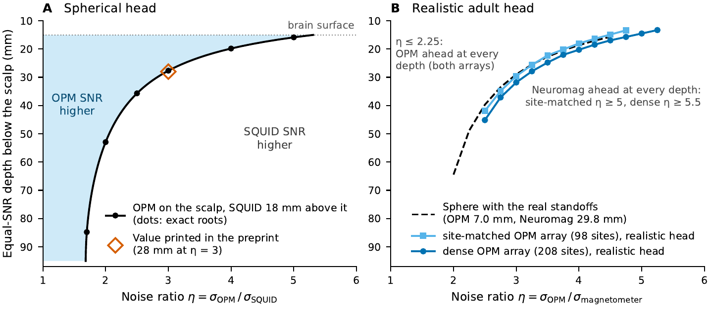
S3. The noise model: components, calibration, validation and sensitivity analyses
S3.1. Components and calibration
Every array saw the same noise sources in the 1–40 Hz band (zero-phase Butterworth filter of order 4; equivalent noise bandwidth 35.1 Hz). Its oracle covariance was computed in closed form (main text, Eq. (4)); each diagonal sensor-noise entry is a channel’s squared spectral density times the equivalent noise bandwidth. We chose this band because the matched filter’s gain rests on the lower frequencies, where most of the brain-noise power lies.
The OPM sensor noise, 15 fT/√Hz in the primary analysis and swept over 7–30 fT/√Hz, is a declared parameter, not a measured device value. It lies within the sensor noise quoted by the clinical OPM studies, although those studies state no band and the device specifications behind them begin at 1 Hz or above (Osborne et al., 2018). The top of the sweep is close to the empty-room floor of the recording of Jas et al. (2026), read from its Fig. 9 on the assumption that its unstated dB reference is 1 fT²/Hz. The Neuromag values, the TRIUX datasheet’s typical values (main text, Section 2.3), describe a representative system rather than one installation. In the band they amount to 20.7 fT and 21.3 fT/cm root-mean-square (RMS). Noise from the measured empty-room spectrum (25.9 fT, 20.0 fT/cm) is a sensitivity analysis. The Neuromag coils are integrated over 8 points per gradiometer and 16 per magnetometer.
The 1,755 background dipoles are a greedy Poisson-disk subset of the usable white-surface vertices with 7-mm minimum spacing (seed 2026). Their Voronoi cells partition the 1,878 cm² of usable cortex (107 mm² on average). Source \(i\)’s moment variance is \(\sigma^{2} a_i\), \(a_i\) being its cell area: a standard deviation of 0.188 nAm × √(\(a_i\)/mm²), or 1.95 nAm RMS over the sources. \(\sigma^{2}\) was fitted once and kept per unit area on every head. The excluded cortex within 4 mm of the inner skull (8.7 % of the vertices) holds the sources nearest to every sensor; Section S3.6 adds it back. Spatially correlated variants used correlation lengths of 5 and 10 mm.
The measured brain noise, to which \(\sigma^{2}\) was calibrated on the median good gradiometer, is the in-band variance of the 320 pre-stimulus windows of the sample recording minus that of its empty-room recording, the bad channel excluded. The windows begin soon after the previous stimulus, so they hold task-related rather than only resting activity. The eight room-field terms are three uniform and five linear-gradient components, expanded about (0, 0, 40) mm in the head frame. They pass through each array’s own coil integration points, and their covariance was fitted to the band-filtered empty-room recording. Plug-in covariances are Ledoit–Wolf estimates from 780 or 4,680 independent samples, twice the time-bandwidth product of 10 and 60 s.
The room field is removed by the projection
where \(E\) holds the array’s responses to the room-field terms and \(W\) is the inverse of the diagonal sensor-noise covariance. It is applied to topographies \(s\) and covariance \(C\) alike (\(Ps\), \(PCP^{\mathsf{T}}\)), by the same rule for every array. For Neuromag it acts on all 306 channels jointly, so its magnetometer and gradiometer comparisons after projection use subsets of jointly projected data. The retained ranks were 298 of 306 for Neuromag (99 of 102 magnetometers, 204 of 204 gradiometers), 200 of 208 for the dense array and 90 of 98 for the site-matched array. Whitening drops eigenvalues of the correlation-normalized covariance below \(10^{-10}\) of the largest. Relative to the room field without projection, the projection reduced the detectability of Neuromag by 0.48 %, that of the dense array by 2.5 % and that of the site-matched array by 6.0 %.
The OPM sensitive axes were computed from the triangles of the boundary-element model (BEM) head surface on the magnetic resonance imaging (MRI) scalp. They deviated from a plane fitted to the dense MRI scalp by a median 1.2° (95th percentile 4.9° site-matched, 7.4° dense). The adult’s stored outer-skin normals lie within 5° of the radial direction. With the OPM axes along these normals at the same sites, the projected dense ratio was 1.073 [1.017, 1.115] instead of 1.115, and 0.82 instead of 0.98 at 45–70 mm. Nearly radial axes make room-field patterns resemble those of deep sources, so the projection removes more of their signal. Without projection, the two constructions gave 1.130 against 1.144.
In the band sensitivity analysis, the brain scale and room field were refitted per band, with and without a first-order 100-Hz OPM response. The dense ratio with sensor plus brain noise was 1.15 at 1–10 Hz, 1.14 at 8–30 Hz and 1.11 at 30–80 Hz (1.07 with the OPM response), against 1.14 in the analysis band. The site-matched ratio was 1.00, 1.01 and 0.99 in the same bands. Sensor noise was 1.3 % and 23 % of a dense-array channel’s variance at 1–10 and 30–80 Hz, and 9.3 % and 74 % of a Neuromag channel’s.
In a 3–70 Hz band, typical of clinical spike review, the dense ratio was 1.137 (1.130 with the OPM response) and the site-matched ratio 1.011, against 1.144 and 1.009 in the analysis band. Their target-bootstrap intervals, [1.133, 1.141] and [1.009, 1.013], are narrower than the parcel bootstrap of the primary comparison (Section S1). Projected, the two ratios were 1.108 and 0.945. Sensor noise was 5.6 % of a dense-array channel’s variance in this band and 34 % of a Neuromag channel’s.
S3.2. What is fitted, calibrated, checked and predicted
Four kinds of agreement must be kept apart (Fig. S2B). For the magnetometers, the room field was fitted to the empty-room recording; with the datasheet sensor noise it reproduced their empty-room level (114.9 against 115.2 fT measured) and explained 94 % of their empty-room variance. For the gradiometers it explained only 1.6 %. Their empty-room agreement (21.4 against 20.2 fT/cm measured) therefore checks the datasheet’s sensor noise, which was not fitted, against this one recording, whose level the model slightly exceeds. The gradiometer brain noise is calibrated: 37.1 fT/cm, equal to the measurement by construction.
The magnetometer brain noise, the background’s one median level that was predicted rather than fitted, fell short: 192 fT modeled against 262 fT measured (0.73 times). It is predicted from the recording that supplied the gradiometer calibration, so it tests the model within that recording and is not an independent validation in another recording. The measured value also holds non-cortical physiological fields that the model omits by design, so the shortfall is not purely an error of the cortical background; Section S3.4 separates the heart’s part. No OPM noise was measured: its sensor noise is declared, and its brain and room noise are the Neuromag-calibrated model seen through the OPM arrays’ lead fields.
Two published simulation studies, each adapted with its own design, check shape and level. The first, Hunold et al. (2016), used 600-nAm spike-wave sources over randomly placed cortical dipoles, conductivities of 0.33, 0.0042, 0.33 S/m and peak-to-peak signal-to-noise ratio (SNR). The second, Goldenholz et al. (2009), used 10-nAm dipoles, channel-averaged power SNR and a background calibrated on recorded noise. Our adaptation of the first’s depth-orientation maps correlated with the published dipole maps at r = 0.96–0.98 but reached only 0.74–0.79 times their level (patch maps: r = 0.93–0.94, 0.79–0.85 times). This held even with a background scale fitted to the paper’s example traces. The calibration rule of the second gave a noise-source amplitude within their published range once normalized to their number of sources (1.77 against 1.6–1.9 nAm; 2.68 nAm on our grid).
Both show the dependence on metric examined in the main text. With brain noise only, the best single channel of a site-matched OPM array in the first reached only 0.70–0.84 times the SNR of the planar gradiometers in every depth row, and 0.89–1.37 times that of the magnetometers, falling with depth. With the channel-averaged SNR of the second, the OPM was within about 0.1 dB of both (−0.08 dB against the gradiometers, +0.09 dB against the magnetometers).
In this model, brain noise dominates both kinds of magnetometer channel (Fig. S2A, C). It is 92 % of a dense-array OPM channel’s in-band variance (room field 4.9 %, sensor noise 3.0 %) and 74 % of a Neuromag magnetometer’s (room field 25 %, sensor noise 0.9 %). Sensor noise, by contrast, was 25 % of a gradiometer’s variance.
The implied single-channel noise ratio OPM/magnetometer, the analog of \(\eta\), was about 2.6 with sensor plus brain noise, the primary condition (2.3 with the room field added). In the recording of Jas et al. (2026) it is about 4.6, over a much wider band (4–330 Hz). Approximate readings of its spectra, not results of this study, locate the difference. Where brain activity dominates, the OPM/SQUID ratio of the spectral peaks is about 2.0. The measured OPM, however, has an empty-room floor of about 28–35 fT/√Hz and a distance-independent low-frequency component of about 200–224 fT/√Hz at its peak. The model thus lacks the OPM’s own floor and a non-brain low-frequency component, which would explain why the measured OPM noise barely fell when the sensors were lifted. Both readings of the preprint’s Fig. 9 are uncertain, and the preprint (version 1) has not been peer reviewed.
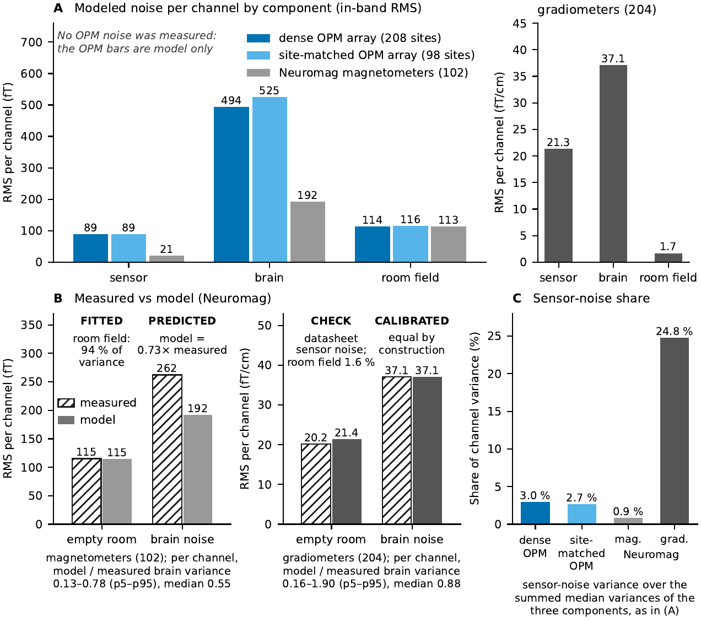
S3.3. Why the ratio falls with depth, and the other adult conditions
Against Neuromag’s 306 channels, the dense ratio fell with depth even with sensor noise alone, from 1.00 in the 10–15 mm bin to 0.64 in the 55–60 mm bin. Neuromag’s detectability with sensor noise only rests on its magnetometers, and the peak-field ratio OPM/magnetometer fell from 5.41 at 10–15 mm to 2.28 at 55–60 mm. The detectability ratio, drawing on many channels, fell less steeply.
Against the 204 gradiometers alone, the ratio with sensor noise only barely changed with depth (3.56 at 10–15 mm, 3.08 at 20–25 mm, 3.44 at 60–65 mm). With brain noise it fell from 1.88 at 10–15 mm to 1.17 at 35–40 mm: here the depth dependence comes from brain noise, which lowers the detectability of deep sources most in every array.
Adding brain noise multiplied the dense ratio by a nearly constant factor in every depth bin (main text, Section 3.3); for the site-matched array the factor rose with depth (1.69–2.09) and partly offset the geometric fall. The factor follows the per-channel noise budget, not better whitening by the denser array. Brain noise multiplied the in-band noise of a Neuromag magnetometer about 9.3-fold over its sensor floor but that of an OPM only about 5.7-fold (a ratio of 1.65). The sparser site-matched array had the larger factor.
With sensor plus brain noise, Neuromag’s detectability was higher than the dense array’s at 4 of the 7,661 targets, on the left medial orbitofrontal (3) and left medial wall (1), 26.5–35.1 mm below the scalp (ratios 0.956–0.997). Pooled over both hemispheres, 12 atlas parcels had a lower dense ratio than the parahippocampal cortex (1.12). Six of them were the posterior cingulate (1.03), precuneus (1.05), caudal anterior cingulate (1.05), transverse temporal (1.06), lingual (1.06) and pericalcarine (1.06) cortex. The others were the paracentral (1.07), rostral anterior cingulate (1.07), isthmus cingulate (1.07), insula (1.09), medial orbitofrontal (1.12) and banks of the superior temporal sulcus (1.12).
A covariance estimated from 780 samples reduced the detectability of Neuromag more than that of the OPMs, by 15 % of the oracle detectability against 9.1 % for the dense and 5.1 % for the site-matched array. It raised the dense ratio to 1.23 and the site-matched ratio to 1.12. With 4,680 samples, the declared 60-s scenario, the penalty was small for every array (main text, Fig. 3).
Three axes with equal noise at the 98 site-matched sites (294 channels) raised the ratio from 1.01 to 1.12 (1.17 projected), close to the dense array’s 1.14 from 208 single-axis sites. With tangential axes twice as noisy, it was 1.05.
S3.4. The model against the measured Neuromag covariance
Each channel of the task recording had its mean removed and was band-passed, as one continuous record, to 1–40 Hz with the zero-phase Butterworth filter of Section S3.1. The measured covariance \(C_{\mathrm{base}}\) is the empirical covariance, without regularization or projection, of the 320 windows from −0.2 to 0 s relative to the stimulus events (38,400 samples). The empty-room covariance \(C_{\mathrm{er}}\) was computed in the same way from 63,666 samples, and the measured brain noise is \(C_{\mathrm{base}} - C_{\mathrm{er}}\). Both leave out the bad channel (MEG 2443), as the calibration of Section S3.1 does, and keep 305 channels (102 magnetometers, 203 gradiometers).
A sample covariance differs from the covariance it estimates, and we measured this finite-sample effect on surrogates of the recordings, 40 in the analysis band and 10 in each sub-band. Each surrogate multiplies the Fourier transform of the whole band-passed recording by one random phase per frequency, the same for all channels. This keeps every channel’s spectrum and every cross-spectrum, and hence the covariance \(C_{\mathrm{full}}\) of the whole recording, but not its non-stationarity. The covariance \(C_i\) of surrogate \(i\) was then estimated from the same baseline samples as \(C_{\mathrm{base}}\), and that of an empty-room surrogate from the same samples as \(C_{\mathrm{er}}\).
Recolored to the model, the surrogates show what an exact model would give when measured in the same way. The linear map \(A\) for which \(A C_{\mathrm{full}} A^{\mathsf{T}}\) equals the modeled covariance turns \(C_i\) into \(A C_i A^{\mathsf{T}}\), a sample covariance of the model with the recording’s temporal structure. The empty-room surrogates were recolored to the modeled empty room in the same way, and in the sub-bands the background scale was refitted to each recolored surrogate as to the data. The variance, correlation, eigenvalue and detectability comparisons were repeated with these covariances, and their 2.5th to 97.5th percentiles over the surrogates are the exact-model ranges below. With 40 surrogates, these percentiles rest on the most extreme one or two values at each end, and with 10 per sub-band they are nearly the minimum and maximum. Each range is therefore itself uncertain, and only a value clearly outside it is read as departing from the model by more than the finite recording explains.
Only the background’s scalar and the room field’s 8 × 8 coefficient covariance were fitted to this dataset. Everything compared below is predicted rather than fitted, but from the same recording, so the comparisons test the model within that recording, not in another subject or session. The model predicted the magnetometers’ median brain-noise amplitude at 0.73 of the measured; an exact model would give 0.98–1.03. For the gradiometers, the scale fitted on half the sites predicted the other half’s median amplitude to 1.00 [0.93, 1.09] over 1,000 random halves (Fig. S3B). Fitted on the inferior half, it predicted the superior half to 1.34, and the other way round to 0.75: the modeled brain noise is too flat from bottom to top.
The per-channel pattern was poorly predicted (Fig. S3A, C). The Pearson correlation of model and measured log variances was 0.14 for the magnetometers and 0.43 for the gradiometers, against a split-half reliability of the measurement of 0.93 and 0.97. The model/measured variance spanned 0.13–0.78 over the magnetometers (5th to 95th percentile) and 0.19–1.90 for the gradiometers, where an exact model would give about 0.95–1.06. The correlation matrices agreed better (r = 0.88 for the magnetometers, 0.76 for the gradiometers); Fig. S3F gives this agreement per distance bin.
Against inter-sensor distance, the modeled magnetometer correlations followed the measured ones at 25–50 mm (0.85 against 0.90) and fell faster beyond, to −0.30 against 0.00 at 200–225 mm (Fig. S3D). Spatially correlated backgrounds did not change this, because the measured long-range correlation is a far-field pattern, not a cortical one. For the gradiometers, Fig. S3E plots the median absolute correlation: 0.43 in the model against 0.43 measured at 25–50 mm (median signed correlation 0.36 against 0.34). Their median signed correlations agreed at every distance.
The measured magnetometer brain noise was more concentrated than the model’s (Fig. S3G, H). Its leading five components held 82 % of the variance against 72 % in the model (participation ratio 5.5 against 7.4), whereas the gradiometer spectra agreed (49 % against 48 %). Fig. S3I compares the dominant subspaces of model and measurement. The positive part of the difference between the measured and modeled magnetometer brain-noise covariances, the excess of the measured noise over the model, summed to 1.10 times the model’s summed variance (exact model, 0.02–0.05). This excess was itself concentrated, 91 % of it in three components (exact model, 58–79 %). Its leading component lay 91 % in the 8-dimensional far-field subspace of the room-field terms, against 7.8 % for a random direction and 67–98 % for an exact model, whose finite-sample excess also lies there.
A cardiac-locked average over 282 beats (heart rate 62 per minute) added 127 fT RMS to the median magnetometer’s baseline windows. This is 25 % of the measured magnetometer brain variance and 51 % of the model’s shortfall, and its leading component lay 91 % in the far-field subspace. With the heart’s field removed, the magnetometer prediction was 0.89 of the measured amplitude, and the correlation of the log variances rose to 0.76 (magnetometers) and 0.66 (gradiometers). The heart thus explains about half of the shortfall and much of the pattern error. The rest lies in far-field components, consistent with distant or non-cortical sources, or with cortical activity correlated over longer distances than the 5 and 10 mm tested.
With the background scale refitted per band on the gradiometers, the magnetometer prediction fell with frequency, from 0.97 at 1–4 Hz to 0.33 at 30–40 Hz (Fig. S4C). Over the same bands, the ratio of the measured to the modeled median magnetometer brain-noise variance grew from 1.07 to 9.28; it is the per-band counterpart of the brain-noise scale factor \(k\) (Section S3.5). The six sub-band variances sum to 0.98 (magnetometers) and 0.95 (gradiometers) of the whole-band baseline variance. The magnetometers’ empty-room level was predicted to 0.75 at 1–4 Hz and 0.98–1.01 from 8–13 Hz up.
Neuromag’s measured detectability of target \(t\) is \(d_{\mathrm{meas}}(t) = d(s_t, C_{\mathrm{base}})\) on the good channels, where \(d(s, C) = (s^{\mathsf{T}} C^{+} s)^{1/2}\) is the detectability of the main text’s Eq. (1), \(s_t\) is the target’s noise-free field and \(C^{+}\) is the pseudo-inverse of the rank-aware whitening (Section S3.1). Because a covariance estimated from finite data inflates detectability, each target’s \(d_{\mathrm{meas}}(t)\) was divided by the correction factor
where \(N\) = 40 is the number of surrogates, \(C_i\) is surrogate \(i\)’s baseline covariance and \(C_{\mathrm{full}}\) the covariance of the whole band-passed recording, each restricted to the channels compared. The corrected measured detectability is \(d_{\mathrm{meas}}(t)/b(t)\).
Over the targets, \(b(t)\) had a median of 1.033 for the 305 channels (5th to 95th percentile 1.030–1.037), 1.013 for the magnetometers and 1.022 for the gradiometers. The hybrid covariance of scenario E (Section S3.5) is the measured empty room plus the modeled brain noise. It was corrected in the same way from the empty-room surrogates, with the modeled brain noise added to their \(C_i\) and \(C_{\mathrm{full}}\) (median factor 1.000). An exact model, measured and corrected in the same way, gives a median measured-to-modeled ratio within 0.997–1.006 (1.030–1.039 uncorrected), the range that the finite recording alone produces.
Uncorrected, Neuromag’s detectability with the measured covariance was 1.18 [1.12, 1.24] times its modeled value; corrected, it was 1.14 [1.08, 1.20], outside the exact-model range. The brackets are parcel-bootstrap intervals, which describe how the median depends on the parcels it pools. The magnetometers alone gave 1.059 [1.003, 1.119] and the gradiometers 1.12 [1.07, 1.18]. With the heart’s field removed, the ratio was 1.15. With the hybrid covariance it was 1.01: the departure lies in the brain noise, not in the room.
By lobe, the corrected measured-over-modeled ratio was 1.40 for the cingulate, 1.25 frontal, 1.06 insula, 1.07 occipital, 1.19 parietal and 0.89 temporal. By depth, the median ratio was 1.19 at 10–15 mm, lowest (1.09) at 40–45 mm and highest (1.42) at 60–65 mm. The measured noise thus favored Neuromag more than the modeled noise did, most for deep and cingulate sources. Adding noise, a positive-semidefinite term, to a covariance cannot raise detectability. A ratio above 1, as at 73 % of the targets, therefore means that the measured noise was lower than the modeled noise along the directions that matter for the target’s field pattern. The measured excess over the model, by contrast, lay in a few far-field components, which the whitening down-weights at little cost to the signal.
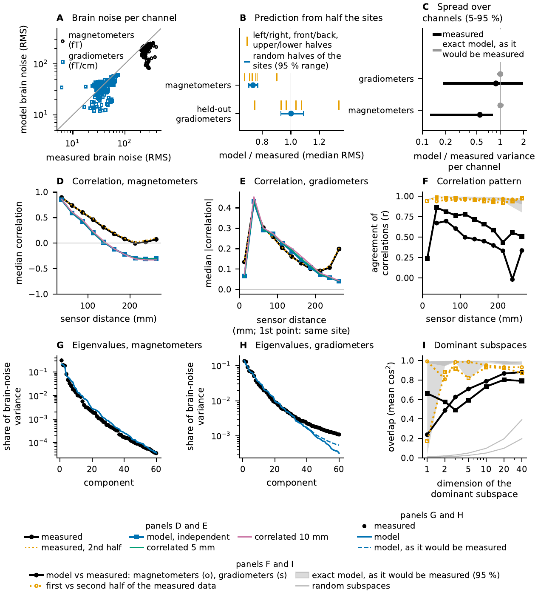
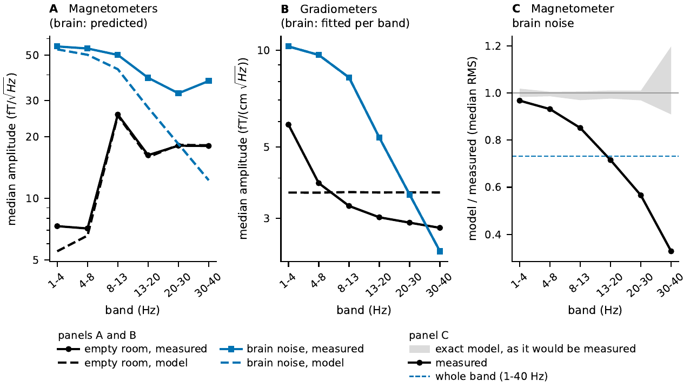
S3.5. Scenarios A–E: what the check implies for the OPM
Because the OPM’s covariance cannot be measured here, Table S3 gives the implied OPM/Neuromag ratio under five stated assumptions about its real noise (main text, Section 3.2). Every scenario holds sensor, brain and room noise, the components of the measured covariance. In scenario A, the OPM’s real covariance changes its detectability, target by target, by the same factor as the measured covariance changes Neuromag’s, so the ratio is the model’s own. In B, both cortical backgrounds are scaled by \(k\), with the model’s structure kept. The brain-noise scale factor \(k\) makes the modeled magnetometer brain noise match the measured one: it is the ratio of the measured to the modeled median magnetometer brain-noise variance (1.86). In C, Neuromag takes its measured covariance and the OPM’s background is scaled by \(k\). The OPM then bears the model’s whole magnetometer shortfall as cortical noise and none of the measured structure; of the five scenarios, C is the least favorable to the OPM. In scenario D, Neuromag takes its measured covariance and the OPM arrays keep their modeled noise; this assumes that the model’s error is specific to Neuromag. In E, Neuromag takes its measured empty room with the modeled brain noise, and the OPM arrays keep their modeled noise; E isolates the sensor and room part of Neuromag’s noise.
Scenarios A, B and E left the primary model’s ratios nearly unchanged. Under scenario D, the dense array’s interval included 1 and the site-matched array’s lay below 1 (Table S3). By depth, scenario D’s dense-array median lay below 1 from the 25–30 mm bin on (point estimates over the per-target values, room field included). Scenario C put both arrays well below 1. Which scenario holds depends on how the OPM’s real noise departs from the model, which no measurement here constrains. The noise model was checked in part, and within one recording, for Neuromag and not at all for the OPM arrays.
| Assumption | Dense OPM array | Site-matched OPM array |
|---|---|---|
| Model, sensor, brain and room noise, unprojected (306 channels; the scenarios use the 305 good channels) | 1.140 [1.117, 1.171] | 1.007 [0.988, 1.028] |
| A: the model’s error common to both systems | 1.141 [1.117, 1.168] | 1.007 [0.984, 1.028] |
| B: both cortical backgrounds scaled by \(k\) | 1.142 [1.118, 1.167] | 1.003 [0.983, 1.017] |
| C: Neuromag as measured; the OPM’s background scaled by \(k\) (the least favorable to the OPM) | 0.799 [0.760, 0.842] | 0.675 [0.647, 0.703] |
| D: Neuromag as measured; the OPM as modeled | 1.034 [0.986, 1.083] (uncorrected 1.001 [0.953, 1.049]) | 0.888 [0.855, 0.921] (uncorrected 0.859 [0.821, 0.891]) |
| E: Neuromag’s measured empty room with the modeled brain noise | 1.130 [1.103, 1.156] | 1.000 [0.979, 1.020] |
S3.6. Sensitivity analyses
Each analysis changed one element of the adult model (the joint runs, several) and recalibrated the background; intervals are from 1,000 parcel-bootstrap resamples of one anatomy. The spike simulations were not repeated under these alternatives.
The primary model omits the cortex within 4 mm of the inner skull: 27,059 white-surface vertices (8.7 % of the valid ones) and 145 cm² of cortex (7.1 %). Lead fields are not converged closer than about 2 mm to the inner-skull mesh. The primary variants therefore add the cortex from 2 mm outward as background noise, as targets (463 of the 532 near-skull targets), or both. Removing near-skull sources from the background and from the targets have opposite effects, so the exclusion is not conservative by construction.
The dense ratio was 1.137 [1.117, 1.160] with the near-skull cortex as noise, 1.152 [1.127, 1.181] with it as targets and 1.144 [1.121, 1.171] with both, against 1.144 in the primary model. The site-matched ratio was 1.008, 1.009 and 1.009, against 1.009. On the near-skull targets themselves, the dense ratio was 1.40 [1.36, 1.45]. A refined single-compartment model, whose lead fields converge nearer the skull, repeated the check down to the inner skull with the same result (Fig. S5B).
The colored OPM noise added 1/f components with corners at 1, 3 and 10 Hz to every white level. The primary band-variance detector whitens spatially only; a frequency-resolved matched filter also whitens in frequency, with a flat (reference) or spike-wave signal spectrum. Under the latter, the dense ratio at 15 fT/√Hz was 1.127 with white noise and 1.122, 1.111 and 1.083 with the three corners (Fig. S5C, D), the last −3.9 % against white noise. The site-matched ratio fell from 1.005 to 0.980 at the 10-Hz corner. With white noise, the frequency-resolved detector gives a slightly lower ratio than the band-variance detector because it also whitens Neuromag’s colored brain noise in frequency.
The heart was modeled as a current dipole 200, 250 or 300 mm below the head origin, or as a magnetic dipole at 250 mm. The eyes were modeled as current dipoles at the two eye centers located on the sample MRI, computed either in the head model or in an unbounded conductor. Each source had three orthogonal moments. Their level matched the room field at the median magnetometer or the magnetometer brain-noise shortfall, and they were added to the cortical background or recalibrated with it.
After the 8-term projection, a cardiac source at 250 mm left 1.0 % of its field energy at the dense array, 0.6 % at the site-matched array and 1.2 % at Neuromag (Fig. S5E). At Neuromag this was 1.0 % at its magnetometers and 52 % at its gradiometers, whose response to a distant source is small to begin with. The eyes left 22 %, 11 % and 11 % at the same three arrays. With sensor plus brain noise, unprojected, the ratios changed by −1.6 % to +1.6 % (dense) and −1.3 % to −0.2 % (site-matched) over all calibrations (Fig. S5F). Every array sees the added far field in a similar proportion to its brain noise. After the projection, the ratios changed by −0.9 % to +1.9 % and −1.6 % to +0.2 %.
The joint runs placed the near-skull cortex in the background, leaving out its targets, which favor the OPM, and added a 10-Hz corner under the frequency-resolved detector. The dense ratio at 15 fT/√Hz was then 1.080 [1.058, 1.106], and 1.091 [1.064, 1.122] with the heart and eyes added at the magnetometer-shortfall level (Fig. S5A). The site-matched ratios were 0.980 and 0.965. Table S4 gives the range over all 40 configurations. At 15 fT/√Hz its lowest dense value came from the band-variance detector with the 10-Hz corner, so the joint run is not the lowest configuration at every level.
With the primary model, the dense ratio fell from 1.298 at 7 fT/√Hz through 1.144 at 15 fT/√Hz to 1.008 at 30 fT/√Hz, and the site-matched ratio from 1.084 to 0.933. In the adult comparison’s own sweep (200 resamples; Table S16), the site-matched array’s interval lay above 1 at an OPM white noise of 10 fT/√Hz (1.049 [1.032, 1.068]) and below 1 at 20 fT/√Hz (0.983 [0.967, 0.997]). Break-even white levels, where the median ratio equals 1 under the modeled Neuromag noise, were found on 33 log-spaced levels over 4–60 fT/√Hz for every comparator in both conditions named in advance (Table S4).
| Array and comparator | Sensor plus brain noise | Projected |
|---|---|---|
| Break-even level (fT/√Hz) | ||
| Dense OPM against Neuromag (306 channels) | 31.5 [28.5, 34.9] | 26.0 [22.3, 29.5] |
| Dense OPM against the magnetometers | 37.4 [34.0, 41.2] | 33.1 [30.0, 36.9] |
| Dense OPM against the gradiometers | 54.2 [51.9, 56.9] | 39.2 [33.9, 43.3] |
| Site-matched OPM against Neuromag (306 channels) | 16.7 [14.0, 19.4] | 8.9 [5.6, 12.4] |
| Site-matched OPM against the magnetometers | 21.6 [17.8, 24.7] | 14.8 [11.1, 18.8] |
| Site-matched OPM against the gradiometers | 34.2 [32.8, 36.1] | 17.8 [12.8, 22.7] |
| Range of the ratio over the configurations, at 7 / 15 / 30 fT/√Hz | ||
| Dense OPM against Neuromag | 1.262–1.315 / 1.072–1.152 / 0.930–1.008 | 1.242–1.300 / 1.044–1.136 / 0.855–0.971 |
| Site-matched OPM against Neuromag | 1.076–1.123 / 0.965–1.009 / 0.820–0.933 | 1.019–1.061 / 0.890–0.950 / 0.706–0.833 |
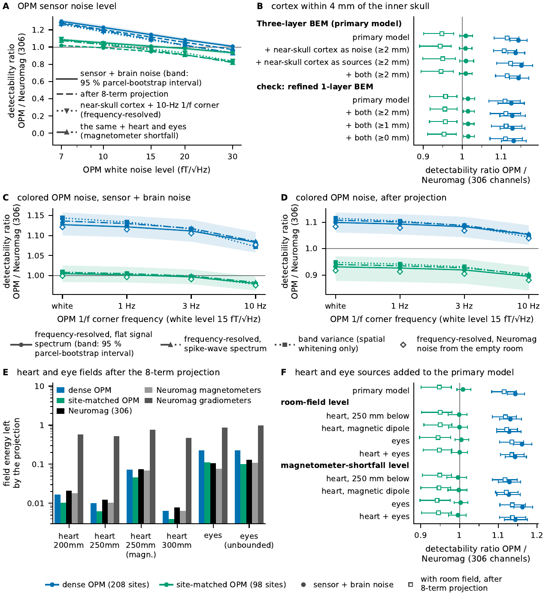
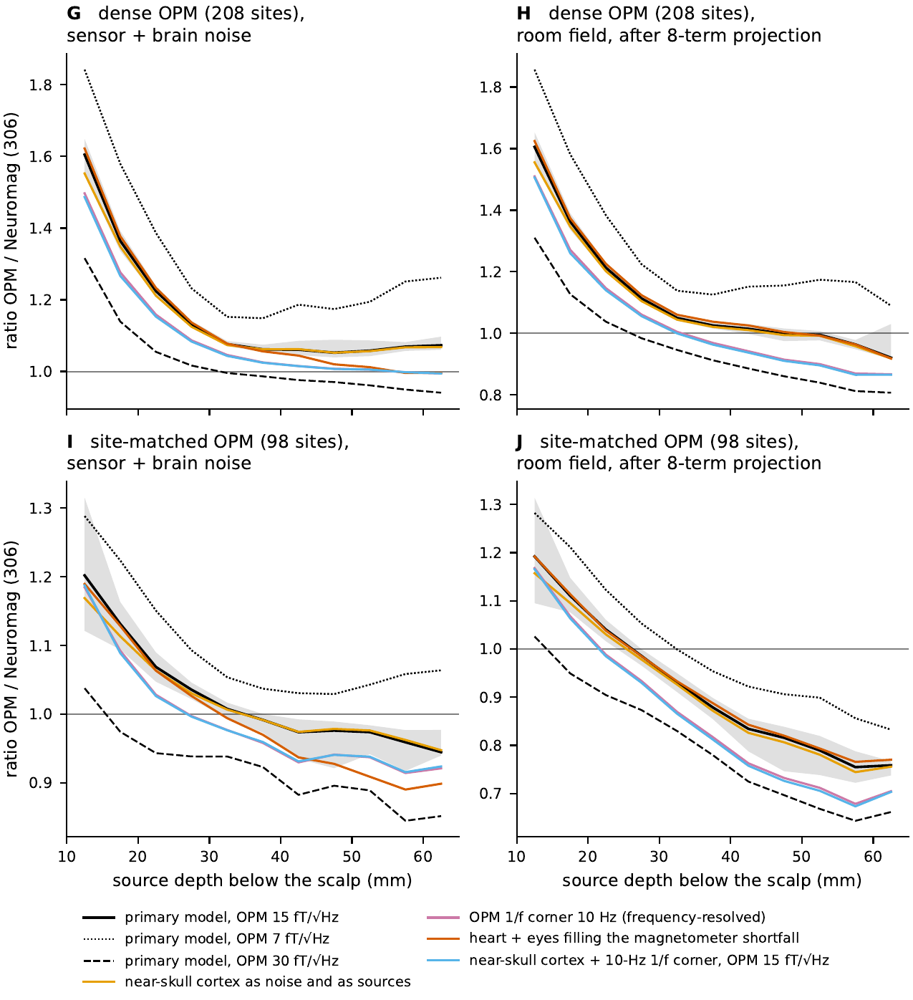
S4. Head models and the MRI check
S4.1. The adult and the three classes of smaller head
The adult is the MNE sample subject (Gramfort et al., 2013), with FreeSurfer surfaces (Fischl, 2012), a three-layer boundary-element model (BEM) on the MRI scalp and 1,878 cm² of usable cortex. The smaller heads belong to three classes, which are not independent subjects (main text, Section 2.2). The two scaled adults keep the adult’s vertices, so \(\Delta\) is taken vertex by vertex: the school-age scaled adult is 0.895 times the adult, and the 2-year scaled adult has the head circumference of the 24-month template. The principal smaller heads are these two scaled adults and the 24- and 12-month templates. The 18-month template, which the MRI check classed as misregistered (Section S4.3), and the three school-aged children, whose near-scalp anatomy could not be verified, are reported separately in Section S10.
The three infant templates (O’Reilly et al., 2021), averages of many MRIs of the Neurodevelopmental MRI Database (Richards et al., 2016), have smooth cortices. Their usable cortex at 24, 18 and 12 months, 1,062, 975 and 895 cm² (48–57 % of the adult’s), lowers their total background power and their patch cancellation. They were used at native size with their own three-layer BEMs, oct-6 source spaces, atlas labels and fiducials.
The three school-aged children A, B and C (7.8–8.7 years; subjects sub-Z213, sub-Z209 and sub-Z226) come from the de-identified OpenNeuro dataset ds005234, released under a CC0 license (Fadeev et al., 2024, 2025), whose authors processed their MRIs. We used their white and sphere surfaces, atlas annotations and dense MRI scalp as distributed. In the distributed file tree, each subject’s watershed BEM surfaces are stored in the preceding subject’s folder. We matched them to each child by the volume information they share with the child’s own surfaces, and the storage objects behind them carry that child’s subject name.
These surfaces put the inner skull implausibly close to the scalp (median 0.8–2.5 mm below it over the upper head), with an outer skull crossing it, so we modeled the children’s skull. The inner skull was moved inward to 8 mm below the scalp wherever it lay shallower, with no vertex within 2 mm of a white-surface vertex. Between vertices it comes within 0.9–1.3 mm of the white surface, and no white vertex lies outside it. The outer skull lies about halfway to the scalp, and the modeled inner skull a median 5.7–7.8 mm below the scalp over the upper head. On the adult, whose segmented skull is known, the same procedure applied to a degraded inner skull changed the primary ratio by at most 0.003 over the modeled skull depths. In every head, the forward model’s outer surface is the watershed skin placed on the MRI scalp.
The dataset has no fiducials, which define the head frame and hence the centered placement, the origin of every scaled helmet and the OPM coverage region. We transferred them from the adult by a similarity fit of the cortices and moved them to the nearest scalp vertex. On the 24- and 12-month templates, this reproduced their own fiducials with errors of 1.6–11.1 mm and their head frames with rotations of 3.2–5.1°. On the 18-month template, the errors were 4.2–14.4 mm and the rotation 5.9°; the largest error was at the nasion, the fiducial farthest from the cortex. Such total rotations are of the order of the placement family’s (pitch ±10°, yaw ±10°, roll ±5°; Section S5.1), which indicates rather than bounds their effect. The transferred fiducials were not checked on the children’s own MRIs. Fiducials from Montreal Neurological Institute (MNI) coordinates were not used: on the adult, they land 10.0–27.4 mm from the digitized ones.
Every head uses the adult’s conductivities (0.3, 0.006 and 0.3 S/m). A single-compartment BEM (0.3 S/m inside the inner skull) has no skull or scalp conductivity layer, but its one boundary is the inner skull of the three-layer model, the modeled one in the children. With it, the difference of medians from the adult in the principal smaller heads was +0.51 to +1.13 dB, against +0.51 to +1.14 dB with three layers. The change was −0.02 to +0.01 dB, and −0.06 to +0.01 dB in the heads of Section S10. This check tests the conductivity layers outside the inner skull, not the location of the inner skull, which the two models share. As distributed, the 12-month template’s skull is 0.25 mm thick at its thinnest (23 of 2,562 inner-skull vertices within 1 mm of the outer skull). With the single-compartment BEM, its \(D\) was +2.03 dB (three layers: +2.04 dB) and its difference from the adult +1.06 dB (+1.05 dB), so the thin skull does not carry its result.
S4.2. Regions
Regions are the lobes of the Desikan–Killiany atlas (Desikan et al., 2006). Frontal: superior, rostral middle and caudal middle frontal, pars opercularis, triangularis and orbitalis, lateral and medial orbitofrontal, precentral, paracentral and frontal pole. Parietal: superior and inferior parietal, supramarginal, postcentral and precuneus. Temporal: superior, middle and inferior temporal, banks of the superior temporal sulcus, fusiform, transverse temporal, entorhinal, temporal pole and parahippocampal. Occipital: lateral occipital, lingual, cuneus and pericalcarine. Cingulate: rostral and caudal anterior, posterior and isthmus. The sixth region is the insula. The medial wall belongs to no region, and both hemispheres are pooled.
We also report parcels emphasized in the epilepsy literature, precentral, superior temporal (“lateral temporal” in main-text Fig. 7) and parahippocampal, and a group of the parahippocampal and entorhinal parcels, which is what “mesial temporal” always means here. With all sources on the cortical surface and no hippocampus or amygdala, this cortex (26.8–28.7 mm below the adult’s scalp, median over targets) is the nearest proxy for mesial temporal generators. The regions were chosen from the literature, and rankings among them are exploratory.
S4.3. The MRI quality check of the school-aged children and the infant templates
The children’s white surfaces come within 3.7–5.7 mm of the scalp used for sensor placement and source depths. Child B has 247 targets shallower than 10 mm (adult: none). Its head is the size of the 24-month template’s (head circumference 48.6 against 49.5 cm; cap volume 1,795 against 1,802 cm³), but its cortex is much larger (1,666 against 1,062 cm²). Both suggested a scalp lying inside the true scalp or misregistered relative to the white surface. We therefore checked the children’s surfaces, exactly as the forward models use them, against their T1 images, with the adult and the 24-month template as references. We then checked the 18- and 12-month templates.
The T1 intensity was sampled along the outward normal of every dense-scalp vertex, from −20 to 20 mm in 0.25-mm steps. The MRI head boundary is where this profile falls through the volume’s air/tissue threshold (Otsu’s method; primary), with the half-maximum edge and the steepest gradient as secondary definitions. Its signed offset from the scalp used (positive outward) was summarized over the cap, the head above the fiducial plane, by median, quartiles and 5th to 95th percentiles, and decomposed into a uniform offset, a translation and a rotation. Frames were checked by comparing each surface’s volume geometry with the T1 header. White-surface registration was checked by the white/gray contrast across the surface, searching coarsely then finely for the rigid shift that maximizes it and reporting that shift’s contrast gain. Head circumference and the targets below 8 and 10 mm were measured against both the boundary and the scalp used.
A head is misregistered if a surface’s header differs from the T1 by more than the header tolerance, or if the white surface’s realigning shift, edge translation or rotation displacement exceeds 1 mm. It is inside or outside if the cap median offset exceeds, or falls short of, the adult’s by more than 1 mm (one voxel) at both the Otsu and the half-maximum edge, and usable otherwise. On the adult, a declared inward scalp displacement of 4 mm was recovered as 4.0 mm, and a 2-mm translation as 2.03 mm (97 % of the offset pattern explained by a translation). Undoing a 2-mm shift of its white surface raised the contrast by 65 %, so a misregistered white surface would be found.
Every surface’s header matched its T1 (corner displacements at most 2.7 \(\times 10^{-5}\) mm in the children; Fig. S6). The children’s white surfaces were registered: best realigning shift 0.0 mm, edge translation at most 0.01 mm, rotation displacement at most 0.02 mm, and a contrast gain of 0 % in each child. The children’s scalp used lay a median 1.3–1.5 mm inside the MRI head boundary at the Otsu edge (0.4–1.2 mm at the half-maximum edge), against 1.3 and 1.1 mm in the adult (Fig. S6C). A FreeSurfer scalp thus lies just inside the T1 edge in every individual head.
The 24-month template’s scalp lay 1.6 mm outside its boundary (verdict: outside), consistent with an average template whose scalp is smoothed outward. The 18- and 12-month templates’ scalps lay 1.6 and 1.3 mm outside (2.3 and 1.6 mm at the half-maximum edge, against 1.6 mm at 24 months). The verdict was outside at 12 months and misregistered at 18 months. The latter’s white surface fitted the T1 contrast best after a 2.3-mm shift, gaining 41 % (other templates: 0.5 mm), with an edge translation of 1.7 mm, both beyond the 1-mm tolerance. This whole-surface misfit is not visible in single sections; its white vertex closest to the scalp used lies 7.3 mm below it (sections not shown). Whether it reflects a displaced surface or the weaker contrast of an average image was not settled. No template surface was repaired, and the offset was not propagated to the template’s results. For this reason, the 18-month template is reported with the children in Section S10.
The head circumference on the MRI boundary minus that on the scalp used was +8.9 to +10.7 mm in the children (49.7–54.5 against 48.6–53.5 cm) and +9.9 mm in the adult (59.6 against 58.6 cm). Measured from the boundary, the median target depth changed by +1.3 to +1.5 mm in the children, +1.3 mm in the adult and −1.7 to −1.4 mm in the templates, whose scalps lie outside their boundaries. The children’s medians thus shifted as the adult’s did; their shallowest targets did not.
The closest white-surface vertex lay 3.7, 3.7 and 5.7 mm below the scalp used in children A, B and C (4.6–7.5 mm below the MRI boundary). It lay 9.7 mm below it in the adult and 9.2 mm in the 24-month template (Fig. S6A). The 5th percentile of white-surface depth below the scalp used was 7.9–12.0 mm in the children, 14.5 mm in the adult and 11.8 mm in the 24-month template. Within 8 mm of the scalp used lay 22.4, 83.4 and 3.6 cm² of the children’s white surface, and within 8 mm of the MRI boundary 6.8, 28.8 and 0.1 cm² (adult: none; Fig. S6B). In no child does the T1 head mask reach a volume face other than the inferior one, which it reaches at the neck in children B and C, as in the adult. The field of view therefore does not cut the head above the neck.
Of the cortical targets of children A, B and C, 3, 18 and 0 lay below 8 mm and 43, 247 and 11 below 10 mm (adult: 0; full-precision depths). Measured to the MRI boundary, child B’s targets less than 10 mm deep fell from 247 to 47. All three children were classed usable, and no surface was repaired.
The children’s shallow cortex, and child B’s small head around a near-adult cortex, are therefore not artifacts of scalp placement or registration, judged against the adult rather than a pediatric norm. The data leave open a head boundary that the T1 images themselves place too deep. Such a boundary would bring the FreeSurfer scalp, which follows the image’s edge, toward the cortex together with the watershed surfaces (Section S4.1). A check against the same images cannot detect it, but an independent measurement of scalp and skull over the upper head, from another sequence or modality, would. Nor can the check settle whether the white surface is anatomically correct within a few millimeters of the scalp, where the modeled scalp-and-skull layer is thinner than the adult’s. It also cannot settle whether three children of one dataset represent their age: the verdicts test registration and scalp position, not tissue thicknesses or head circumference against norms for age.
The source rule, no source within 4 mm of the inner skull, left out 7.3 %, 10.0 % and 3.3 % of the white-surface area of children A, B and C. It left out 7.2 % in the adult, 9.3–10.6 % in the scaled adults and 0.8–2.6 % in the templates. The adult’s share is the 7.1 % of Section S3.6 plus the little cortex outside the inner skull (0.05 cm² of it within 10 mm of the scalp). In the children it includes 94–100 % of the cortex within 8 mm of the scalp; of child B’s 14,761 white-surface vertices there, 570 pass the rule. The children’s results therefore do not describe a near-scalp cortex. With the 18-month template’s, they are reported in Section S10 and enter none of the principal results.
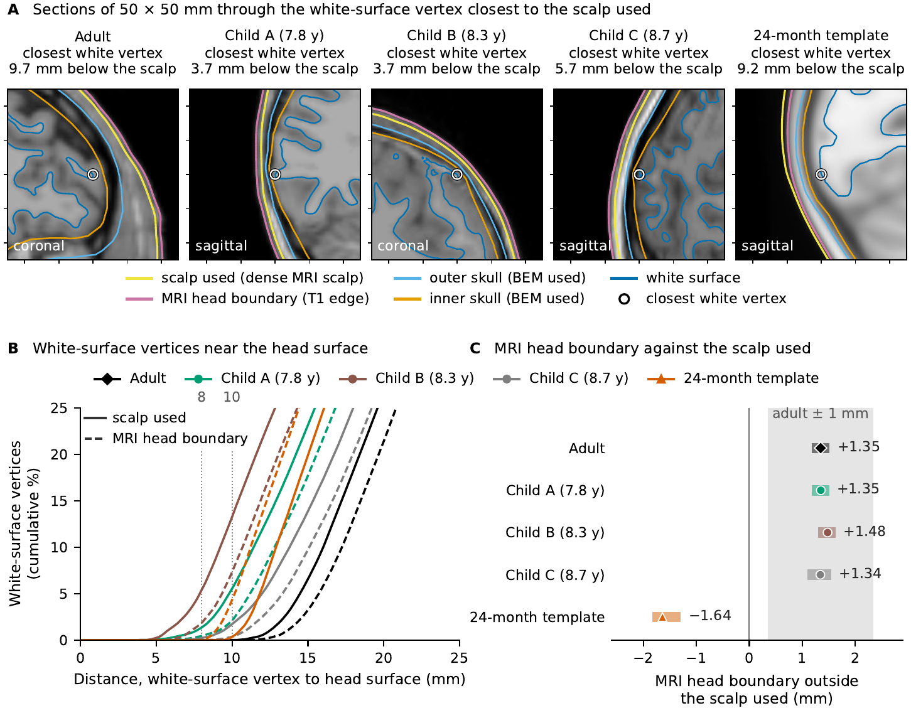
S5. Helmet constructions
S5.1. The fixed adult helmet and its placements
The centered placement puts each head’s frame where the adult’s lies in the sample recording (its device-to-head transform), keeping the ear line in place. The primary placement, top contact, raises the head from there until the nearest magnetometer coil center is 20 mm from the scalp, the 18-mm Dewar spacing plus a margin. This best-fit assumption, not documented practice, favors Neuromag. A child in an adult helmet may be placed centrally and repositioned toward the expected source (Gaetz et al., 2008), and a small child’s shoulders can stop the head short of the top (Tesan et al., 2010). The other placements bound this choice.
A family of 12 source-blind placements, chosen from the geometry alone, tests the sensitivity to placement. It comprises top and back contact, shifts of ±5 mm left–right and front–back, and rotations of ±10° pitch, ±5° roll and ±10° yaw, each raised to contact. One lateral shift was infeasible for child C, leaving 11. Three further placements are the centered pose, the laterally centered pose (moved to the helmet’s midline) raised to contact, and true contact at the Dewar spacing.
The adult’s own \(D\) was +1.27 dB at its measured pose, +1.00 dB at top contact, +1.01 dB at laterally centered contact and +0.87 dB at true contact. Over the family it spanned +0.98 to +1.43 dB (0.46 dB), top contact ranking 2 from the lowest. Against the adult placed by the same rule, the principal smaller heads’ \(\Delta\) was +1.14 to +2.50 dB at the centered pose and +0.44 to +1.07 dB at top contact. It was +0.44 to +1.06 dB at laterally centered contact and +0.44 to +1.09 dB at true contact. In the heads of Section S10, \(\Delta\) was +0.76 to +2.08, +0.17 to +0.88, +0.09 to +0.75 and +0.17 to +0.85 dB at the same four placements.
With sensor plus brain noise, the principal smaller heads’ point estimates of \(\Delta\) at top contact kept their sign in the other comparisons. They were +0.65 to +1.49 dB for the dense array against the gradiometers, +0.41 to +0.98 dB against the magnetometers and +0.34 to +1.10 dB for the site-matched array. Those of the heads of Section S10 kept their sign too (+0.11 to +1.26, +0.25 to +0.72 and +0.08 to +0.61 dB). With the room field projected out, \(\Delta\) was unchanged in the scaled adults (+0.44 to +1.09, against +0.44 to +1.07 dB). It was lower in the 24- and 12-month templates (+0.42 and +0.83, against +0.73 and +0.96 dB). Section S10.2 gives the other heads’ values.
The adult’s placement spread (0.46 dB) exceeded \(\Delta\) in the school-age scaled adult (+0.44 dB), the only principal smaller head with so small a \(\Delta\). It also exceeded \(\Delta\) in children A, B and C, whose own \(D\) varied by 0.24, 0.57 and 0.86 dB over the family. Against each head’s family median instead of top contact, the difference of pooled medians from the adult shrank by 0.17 and 0.14 dB in the scaled adults and by 0.18 and 0.16 dB in the 24- and 12-month templates. It shrank by 0.20 dB in the 18-month template and by 0.05–0.17 dB in the children.
The OPM arrays were refitted to each head by the adult’s rules and kept in every helmet, with sensor noise, room field and analysis band unchanged. The smaller heads carry 144–174 dense and 80–91 site-matched sites, at a median standoff of 6.99–7.00 mm above each head’s own MRI scalp. The background variance per unit cortical area was calibrated once on the adult, so a smaller cortex carries less total background; as a sensitivity analysis, it was multiplied by 0.5 and by 2.
Fit and head size act on \(D\) through at least four routes. A wider SQUID gap and a shallower cortex raise it, whereas fewer OPM sites and, in the school-aged children, a near-adult cortex close to the OPMs (unverified near-scalp anatomy; Sections S4.3 and S10) lower it. The constructions below combine these routes differently, and none isolates one (main text, Section 3.5).
S5.2. The helmet scaled with the head
Every coil center is scaled about the head origin by the child-to-adult ratio of head circumferences, keeping coil size, orientation and noise. The factor is raised in steps until no coil is within 18 mm of the scalp; unlike the sphere’s constant gap (Section S2), the gaps scale with the head. The helmet was scaled about the centered head and, as a variant that removes the templates’ lateral offset, about the laterally centered head (Section S8.2 records when the variant was added). The construction asks what the adult’s fit would give at a child’s size and is not a pediatric SQUID device. The main text treats it as secondary because it also brings the sensors closer than the adult’s own fit (see below).
In its own scaled helmets, the adult’s \(D\) was +1.27 and +1.28 dB (centered and laterally centered; scale factor 1.000). Scaled about the laterally centered head, the helmet left the OPM its absolute advantage (\(D\) +0.73 to +1.00 dB in the principal smaller heads). \(\Delta\) against the adult in its own scaled helmet, however, was negative in every principal smaller head. It was −0.21 [−0.25, −0.17] and −0.38 [−0.43, −0.32] dB in the scaled adults, and −0.30 [−0.42, +0.02] and −0.18 [−0.37, +0.06] dB in the 24- and 12-month templates, whose intervals include zero. These parcel-bootstrap intervals exclude placement and construction uncertainty. With the room field projected out, the difference of medians from the adult was −0.63 to −0.36 dB in these heads (−0.55 to −0.28 dB with sensor plus brain noise). In the heads of Section S10, \(D\) was +0.62 to +1.33 dB and \(\Delta\) −0.76 to +0.04 dB. Only child C had a positive point estimate (+0.04 [−0.20, +0.20] dB), an interval that also contains its fixed-helmet \(\Delta\); its scaled helmet keeps a median gap of 33.1 mm against the adult’s 29.6 mm.
Scaled about the centered head, the helmet left a residual gain in the off-center 24-month template (+0.24 dB; \(\Delta\) −0.37 to +0.24 dB over the principal smaller heads). It did so too in the 18-month template and child C (+0.18 and +0.56 dB).
Three checks qualify the drop of \(\Delta\) in the scaled helmet. First, part of the drop comes from the reference: against the adult at top contact, the difference of medians was −0.26 to +0.01 dB in the principal smaller heads (−0.38 to +0.33 dB in the others). Second, the gap scales with the helmet and shrank below the adult’s 29.6 mm in every principal smaller head (25.1–27.7 mm) and in all the others but child C. This tighter fit than the adult’s favors Neuromag, and the helmet fitted at the adult’s gap avoids it (Section S5.3). Third, the principal smaller heads carry fewer OPM sites (144–174 against 208). The adult’s array subsampled to those counts lost 0.27–0.53 dB, so at an equal OPM site count \(\Delta\) in the fixed helmet would be +0.63 to +1.43 dB.
S5.3. The helmet fitted at the adult’s gap
The Neuromag helmet is scaled about the head origin of each head’s laterally centered pose until the median gap from magnetometer coil center to scalp equals the adult’s. The target is 29.6 mm, the adult’s gap in its own helmet about its laterally centered head (scale factor 1.000), or, as a variant, 28.4 mm, its gap at top contact in the fixed helmet. Coil size, orientation, integration points and noise are kept, and no coil center may come within the 18-mm Dewar spacing of the scalp or lie inside the head. In child C, this clearance binds first: the helmet stops at a gap of 32.8 mm, 3.3 mm above the target, with a scale factor of 0.941 instead of 0.920.
Because the OPM arrays are those of the fixed helmet, the within-head contrast is a property of Neuromag alone, whichever OPM array is compared. The contrast is the area-weighted median over a head’s targets of \(F(v) = D_{\mathrm{fixed}}(v) - D_{\mathrm{fitted}}(v)\) (main text, Eq. (3)), with the fixed helmet at top contact. Intervals use 1,000 parcel-bootstrap resamples for the dense array in the fixed helmet and in the helmet fitted at 29.6 mm, and 200 elsewhere. The fitted helmet (Table S5) is a geometric control at the adult’s median gap, not at its gap distribution, placement or coverage, and not a pediatric SQUID system.
| Head | Gap, fixed helmet (mm) | Gap, scaled with the head (mm) | Gap, fitted at the adult’s gap (mm) | Scale factor, fitted | Scale factor, fitted at the top-contact gap |
|---|---|---|---|---|---|
| Adult | 28.4 | 29.6 | 29.6 | 1.000 | 0.991 |
| School-age size | 34.1 | 26.6 | 29.6 | 0.916 | 0.908 |
| 2-year size | 39.1 | 25.1 | 29.6 | 0.876 | 0.868 |
| 24-month template | 38.5 | 27.0 | 29.6 | 0.881 | 0.873 |
| 12-month template | 40.4 | 27.7 | 29.6 | 0.855 | 0.846 |
| Reported separately (Section S10) | |||||
| 18-month template | 38.9 | 27.2 | 29.6 | 0.880 | 0.872 |
| Child A | 35.2 | 26.1 | 29.6 | 0.921 | 0.913 |
| Child B | 38.4 | 28.0 | 29.6 | 0.877 | 0.867 |
| Child C | 32.6 | 33.1 | 32.8a | 0.941 | 0.941 |
At the adult’s gap (Table S6), \(\Delta\) was +0.02 to +0.05 dB in the principal smaller heads. Every interval included zero except the school-age scaled adult’s, whose lower bound rounds to zero from above. The site-matched array, the projected condition and the variant at the top-contact gap gave −0.07 to +0.12, −0.25 to −0.05 and +0.01 to +0.02 dB in these heads. In the heads of Section S10, \(\Delta\) at the adult’s gap was −0.39 to +0.15 dB, its interval below zero in child A and child B.
Against the adult at top contact in the fixed helmet, the principal smaller heads fitted at the adult’s top-contact gap differed from it by +0.10 to +0.23 dB (3 of 4 intervals above zero). The heads of Section S10 differed from it by −0.22 to +0.30 dB. This cross-helmet difference depends on the adult’s placement. The interaction, which places the adult by the same rule in both helmets, was +0.40 to +1.11 dB in the principal smaller heads at the top-contact gap. In the fitted helmet, the dense array kept its absolute advantage in the adult (+1.28 dB) and in every principal smaller head (\(D\) +1.25 to +1.31 dB; +0.97 to +1.32 dB in the others). The site-matched array’s \(D\) in the principal smaller heads was +0.09 to +0.33 dB with sensor plus brain noise and −0.61 to −0.10 dB projected.
| Head | \(\Delta\), dense (dB) | \(\Delta\), site-matched (dB) | \(\Delta\), dense, projected (dB) | \(\Delta\), dense, at the top-contact gap (dB) | Within-head contrast (dB) | Interaction (non-additivity) (dB) | \(\Delta\) at equal OPM site count (dB) |
|---|---|---|---|---|---|---|---|
| School-age size | +0.03 [0.00, +0.05] | +0.03 | −0.05 [−0.09, 0.00] | +0.02 | +0.17 [+0.08, +0.28] | +0.40 [+0.30, +0.50] (+0.02) | +0.20 [+0.16, +0.24] |
| 2-year size | +0.02 [−0.02, +0.06] | +0.12 | −0.07 [−0.13, −0.02] | +0.01 | +0.76 [+0.64, +0.90] | +1.10 [+0.97, +1.21] (−0.05) | +0.30 [+0.24, +0.35] |
| 24-month template | +0.04 [−0.06, +0.19] | +0.02 | −0.25 [−0.52, −0.16] | +0.02 | +0.34 [+0.20, +0.54] | +0.54 [+0.44, +0.73] (+0.15) | +0.42 [+0.29, +0.68] |
| 12-month template | +0.05 [−0.09, +0.24] | −0.07 | −0.25 [−0.49, +0.08] | +0.02 | +0.55 [+0.38, +0.78] | +0.66 [+0.56, +0.99] (+0.24) | +0.49 [+0.33, +0.81] |
| Reported separately (Section S10) | |||||||
| 18-month template | +0.15 [−0.08, +0.33] | −0.02 | −0.21 [−0.37, 0.00] | +0.13 | +0.42 [+0.27, +0.61] | +0.70 [+0.45, +0.83] (+0.03) | +0.42 [+0.22, +0.69] |
| Child A | −0.30 [−0.48, −0.22] | −0.26 | −0.67 [−0.79, −0.43] | −0.27 | +0.29 [+0.19, +0.40] | +0.53 [+0.44, +0.70] (+0.08) | +0.16 [−0.12, +0.23] |
| Child B | −0.39 [−0.54, −0.17] | −0.45 | −0.50 [−0.62, −0.39] | −0.36 | +0.42 [+0.27, +0.61] | +0.71 [+0.58, +0.77] (+0.09) | +0.16 [−0.10, +0.41] |
| Child C | +0.01 [−0.23, +0.18] | +0.13 | −0.27 [−0.42, +0.02] | +0.11 | −0.12 [−0.20, −0.02] | +0.04 [−0.11, +0.19] (+0.13) | +0.48 [+0.14, +0.62] |
The within-head contrast is what Neuromag loses in a head to the fit, gap and placement of the fixed helmet together. It was +0.17 to +0.76 dB in the principal smaller heads, every interval above zero, and −0.12 to +0.42 dB in the heads of Section S10. The adult’s was −0.23 dB, because its laterally centered pose in its own helmet is looser than top contact. Part of any contrast is the construction itself. At an equal median gap, between top contact in the fixed helmet and the helmet fitted at its own top-contact gap, the adult’s contrast was −0.11 [−0.15, −0.08] dB. Child C’s negative contrast, with its two gaps nearly coinciding, is of this kind (Section S10.3).
The interaction, the extra that the fixed helmet gives a smaller head beyond the adult, is the \(\Delta\) estimator applied to \(F\) instead of \(D\) (Section S1). It was +0.40 to +1.10 dB in the scaled adults and +0.54 to +0.66 dB in the 24- and 12-month templates, every interval above zero. In the heads of Section S10 it was +0.04 to +0.71 dB. Table S6 gives the non-additivity residual per head.
For equal OPM site counts, the adult’s dense array was subsampled by farthest-point sampling to each smaller head’s dense site count (144–174 sites), the adult in the same fitted helmet. At the adult’s gap, \(\Delta\) was then +0.20 to +0.49 dB in the principal smaller heads, every interval above zero. It was +0.20 to +0.30 dB in the scaled adults and +0.42 and +0.49 dB in the 24- and 12-month templates. A smaller head’s dense array thus gains a little at the adult’s median gap and equal site count. This may be because its cortex lies closer to the OPMs, which these controls do not test. In the principal smaller heads, the fewer sites lower \(\Delta\) by about as much. In the heads of Section S10, \(\Delta\) at equal site count was +0.16 to +0.48 dB, and in children A and B the fewer sites lower it by more than this gain (Section S10.3).
As a measure of placement uncertainty, \(\Delta\) in the fixed helmet was computed, as a difference of medians, at each of the 12 source-blind placements (Table S7). It was positive at every placement in each of the four principal smaller heads, whose wider crossed bands also stayed above zero. In the heads of Section S10, child C’s band and every child’s crossed band included zero (Section S10.2). Top contact was not an extreme of any band.
| Head | \(n\) | Band (dB) | Span (dB) | Rank of top contact | Crossed band (dB) | \(\Delta\) at top contact (dB) |
|---|---|---|---|---|---|---|
| School-age size | 12 | +0.20 to +1.12 | 0.92 | 9 | +0.03 to +1.58 | +0.44 [+0.34, +0.56] |
| 2-year size | 12 | +0.67 to +1.61 | 0.94 | 8 | +0.26 to +2.07 | +1.07 [+0.91, +1.18] |
| 24-month template | 12 | +0.48 to +1.38 | 0.90 | 7 | +0.32 to +1.53 | +0.73 [+0.46, +0.98] |
| 12-month template | 12 | +0.75 to +1.66 | 0.92 | 10 | +0.55 to +1.82 | +0.96 [+0.61, +1.51] |
| Reported separately (Section S10) | ||||||
| 18-month template | 12 | +0.54 to +1.36 | 0.82 | 11 | +0.37 to +1.51 | +0.88 [+0.54, +1.05] |
| Child A | 12 | +0.06 to +0.37 | 0.30 | 10 | −0.18 to +0.52 | +0.30 [+0.11, +0.38] |
| Child B | 12 | +0.19 to +0.63 | 0.44 | 9 | −0.03 to +0.99 | +0.41 [+0.28, +0.54] |
| Child C | 11 | −0.10 to +0.70 | 0.80 | 5 | −0.38 to +0.94 | +0.17 [−0.07, +0.34] |
S5.4. Depth matching
Depth is the route of head size that the sphere describes (Section S2). The cortex of the 24- and 12-month templates is shallower than the adult’s. Their area-weighted median depths were 21.8 and 20.6 mm, against 26.2 mm, and 42 % and 46 % of their cortical area lay 10–20 mm below the scalp, against 21 % in the adult. In the 18-month template these were 23.2 mm and 36 %, and in the children 20.0–23.4 mm and 35–47 %. Reweighting each head’s targets to the adult’s depth distribution lowered the difference of pooled medians from the adult in the fixed helmet. It fell from +0.85 and +1.05 to +0.32 and +0.29 dB in these two templates and from +0.90 to +0.53 dB in the 18-month template. In the children it fell from a range of +0.19 to +0.52 dB to one of −0.05 to +0.05 dB.
Within depth strata, \(\Delta\) (the difference of the two heads’ area-weighted medians) was positive in every stratum of the principal smaller heads (+0.11 to +1.62 dB; Fig. S7A). It was also positive in every stratum of the 18-month template (+0.24 to +1.52 dB). For the children (Section S10), it was negative in 11 of the 12 child-strata at 10–30 mm (−0.36 to +0.08 dB), with no interval above zero (largest lower bound −0.25 dB). Deeper, it was positive (+0.01 to +1.77 dB; Fig. S7B). In this decomposition, their shallower cortex matches their fixed-helmet gain. The depths are measured from the scalp used, unverified near the scalp in the children; measured from the MRI boundary, the children’s median depths shift as the adult’s do (Section S4.3). The decomposition describes the model’s surfaces, not a tested mechanism.
In the helmet fitted at the adult’s gap, the children’s strata were negative throughout the depths that hold most of their cortex. For child A, \(\Delta\) was −1.70, −0.91 and −0.20 dB at 10–15, 20–25 and 30–40 mm, its intervals including zero only from the 40–50 mm stratum down. The two decompositions, fitting the helmet and matching depth, are not additive, and neither apportions the routes exactly.
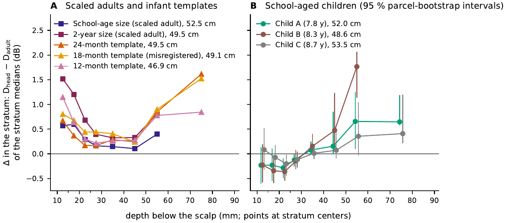
S5.5. Noise in the smaller heads and the share of cortex where the OPM’s detectability is higher
With the adult’s background variance per unit cortical area in every head, the noise differs between classes of head. In the fixed helmet, Neuromag’s magnetometer brain noise fell from 202 fT in the adult at top contact (192 fT at its measured pose) to 98–150 fT in the principal smaller heads. Their wider gap and smaller cortex both contribute, and the shares were not separated: moving the school-age scaled adult from its centered pose to top contact raised this noise from 131 to 150 fT. A smaller cortex does not lower the field at sensors that stay close, as the OPMs show (525 and 537 fT in the scaled adults, against 494 fT in the adult).
The children’s cortex is nearly adult-sized (1,666–1,869 cm²), so Neuromag’s brain noise stayed at 168–194 fT. The OPMs, close to a near-adult cortex that lies near the scalp in these surfaces (unverified there; Sections S4.3 and S10.1), saw more of it (617–751 fT).
The share of cortex on which the OPM’s detectability is higher, the kind of metric used by Jas et al. (2026), is saturated for the dense array (99.6 % of cortical area in the adult). For the site-matched array it was 49 % in the adult at top contact (56 % of all targets at the measured pose). As a proportion of cortical area in the fixed helmet, it was 0.70–0.89 in the principal smaller heads and 0.58–0.73 in the heads of Section S10 (Fig. S8C).
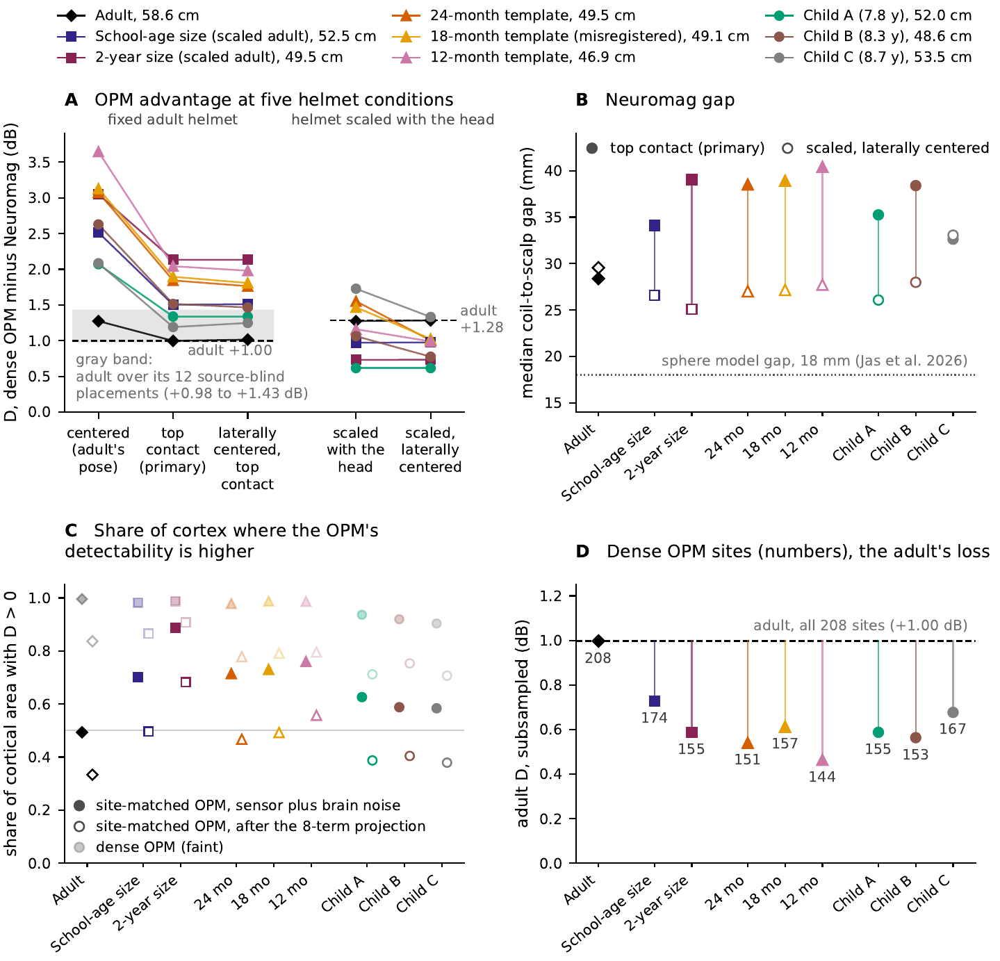
S6. Regions and the noise floor across heads
Unless stated otherwise, \(D\) is the dense optically pumped magnetometer (OPM) array’s detectability relative to Neuromag’s 306 channels in dB (Section S1), with sensor plus brain noise. It is the area-weighted median over the cortical targets of a head or region (both hemispheres). The helmets are those of Section S5. The eight smaller heads are the two scaled adults, the three infant templates and the three school-aged children. The main text draws its pediatric conclusions from the scaled adults and the 24- and 12-month templates, the principal smaller heads. It reports the other four, the 18-month template and the children, separately (Section S10). Ranges and counts here over all smaller heads, or over all templates, include those four.
S6.1. Regions by head
In the fixed adult helmet at top contact, the dense array’s detectability was higher in every region of every head (\(D\) +0.25 to +3.06 dB over the cells of Fig. S9A). A smaller head exceeded the adult’s value for the same region in 72 of 80 cells. Of the six lobes, the temporal lobe gained most in the principal templates (+2.63 and +3.02 dB at 24 and 12 months, against +1.17 dB in the adult). It did so too in the 18-month template (+2.88 dB).
The parahippocampal and mesial temporal rows, the adult’s lowest temporal rows (+0.74 and +0.74 dB), were higher in every principal smaller head and in the 18-month template. The mesial temporal group reached +1.16 to +2.59 dB in the principal smaller heads and +2.79 dB in the 18-month template. In the children it reached +0.46 to +1.77 dB, child C (+0.46 dB) lying below the adult. The cingulate was the lowest row in every head: +0.25 dB in the adult, +0.35 to +0.61 dB in the principal smaller heads and +0.26 to +0.56 dB in the heads of Section S10.
The peak-channel signal-to-noise ratio (SNR; sensor plus brain noise) gave a different picture. Against the magnetometers alone, the dense array’s peak-channel SNR was higher in every head. It was +1.84 dB in the adult at top contact, +2.15 to +2.71 dB in the principal smaller heads and +2.05 to +2.48 dB in the heads of Section S10. Against Neuromag’s best channel, the dense array’s peak-channel SNR was lower in the adult (−1.11 dB) and in each child (−0.64, −0.28 and −0.85 dB in A, B and C). In the principal smaller heads it ranged from −0.29 to +0.79 dB, and in the 18-month template it was +0.45 dB.
In the helmet scaled with the head (lobes only; Fig. S9B), the regional gain was smaller, by how much depending on the reference. Of the 48 lobe cells of the smaller heads, 39 were at or below the adult’s in its own scaled helmet and 28 at or below the adult’s at top contact. Against the adult at top contact, the counts were 15 of 24 for the principal smaller heads, 2 of 6 for the 18-month template and 11 of 18 for the children. The counts compare point estimates, without a tolerance. The children’s lobes ranged from +0.17 to +1.62 dB in the scaled helmet.
In the helmet fitted at the adult’s gap (Table S8), the scaled adults kept the adult’s ordering: frontal, precentral and superior temporal cortex highest, cingulate and insula lowest. The cingulate was the lowest row in every head except the children, where the insula lay just below it. The templates and children reordered the upper rows. The parahippocampal and mesial temporal rows were high in the 24-month template and, of the heads of Section S10, in the 18-month template and child B; the occipital lobe was highest in child C.
The children’s regional point estimates lay on both sides of the adult’s. Child B was below the adult in the frontal lobe (−0.81 dB) and the precentral gyrus (−0.63 dB). It was above the adult in the parahippocampal (+0.86 dB) and occipital (+0.23 dB) cortex. Child C was below the adult in the entorhinal cortex (−1.02 dB) but above it in the occipital lobe (+0.64 dB).
The cortical maps (Fig. S10; main text, Fig. 8C) show \(D\) largest on the lateral convexity, most on gyral crowns, with medial surfaces near zero. By region, then, the ordering changed with the helmet; the relative weight of helmet and region was not quantified. Heat maps and cortical maps show point estimates, and the pediatric intervals represent within-anatomy resampling only.
| Principal smaller heads | Reported separately (Section S10) | ||||||||
|---|---|---|---|---|---|---|---|---|---|
| School-age | 2-year | ||||||||
| Region | Adult | size | size | 24 mo | 12 mo | 18 mo | Child A | Child B | Child C |
| Frontal | +1.82 | +1.80 | +1.77 | +1.89 | +2.19 | +2.05 | +1.22 | +1.01 | +1.52 |
| Parietal | +1.15 | +1.34 | +1.22 | +1.05 | +1.02 | +0.97 | +0.74 | +0.89 | +1.53 |
| Temporal | +1.32 | +1.28 | +1.20 | +1.40 | +1.35 | +1.50 | +1.13 | +1.21 | +1.03 |
| Occipital | +0.95 | +0.93 | +0.85 | +0.82 | +0.74 | +0.79 | +1.18 | +1.18 | +1.58 |
| Cingulate | +0.40 | +0.41 | +0.39 | +0.56 | +0.46 | +0.50 | +0.30 | +0.37 | +0.41 |
| Insula | +0.71 | +0.66 | +0.67 | +1.08 | +0.74 | +0.96 | +0.28 | +0.32 | +0.40 |
| Precentral | +1.79 | +1.70 | +1.57 | +1.56 | +1.91 | +1.73 | +1.10 | +1.16 | +1.56 |
| Superior temporal | +1.39 | +1.50 | +1.22 | +1.09 | +1.11 | +1.27 | +0.96 | +0.71 | +0.94 |
| Parahippocampal | +0.88 | +0.87 | +1.01 | +1.97 | +0.88 | +2.25 | +0.81 | +1.74 | +1.49 |
| Mesial temporal | +0.91 | +0.82 | +0.93 | +1.80 | +1.10 | +2.01 | +0.37 | +1.32 | +0.76 |
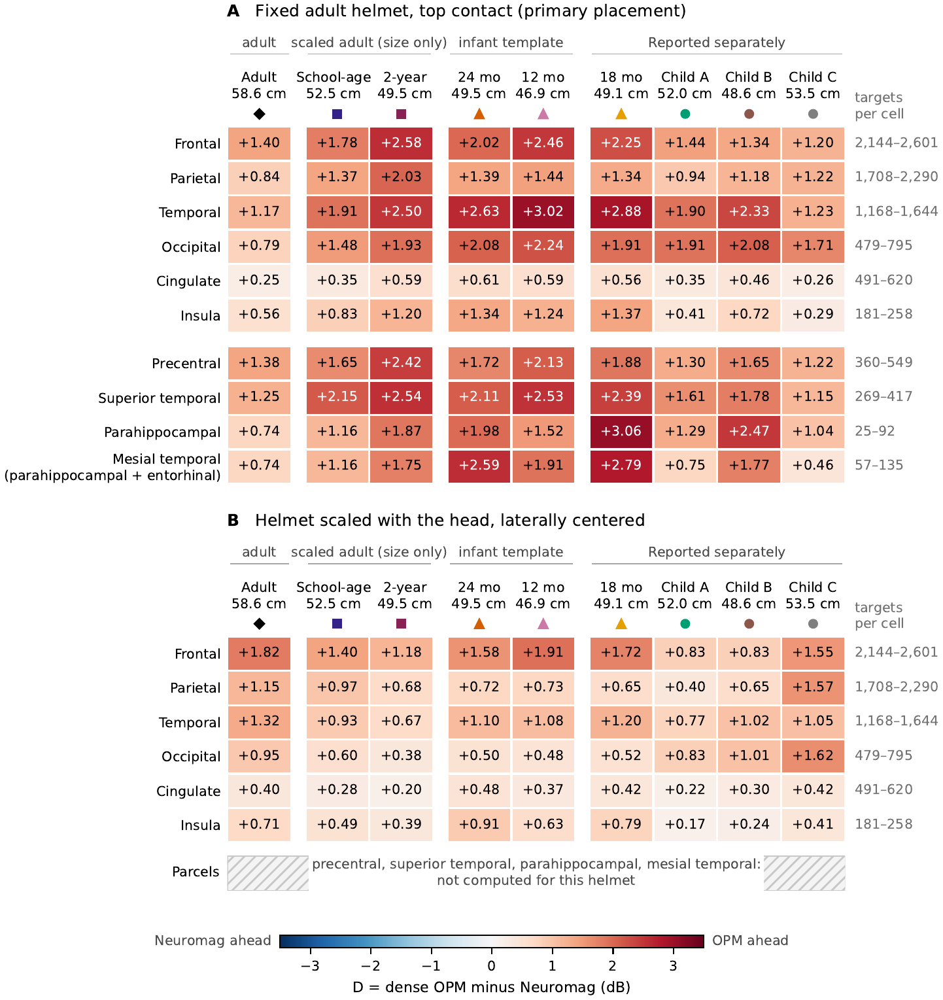
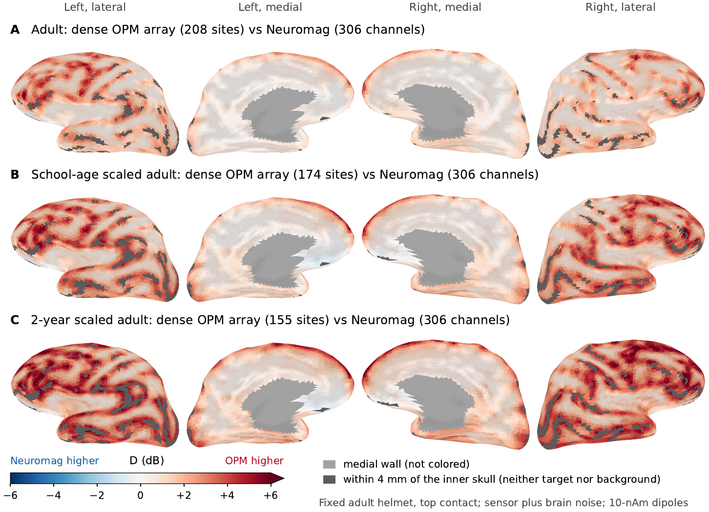
S6.2. The noise floor across heads
In every head, \(D\) fell as the OPM’s sensor noise rose (Fig. S11); these sensitivity values are medians without intervals (Table S16). At 30 fT/√Hz, the upper end of the sweep (Section S8.3), the dense array’s \(D\) was −0.05 dB in the adult but stayed positive in every smaller head. It was +0.37 to +0.97 dB in the principal smaller heads and +0.27 to +0.72 dB in the four heads of Section S10. The site-matched array’s \(D\) was negative in every head except the 2-year scaled adult. It was −0.79 dB in the adult, −0.41 to +0.18 dB in the principal smaller heads and −0.39 to −0.14 dB in the heads of Section S10.
The difference from the adult also depended on the noise. The principal smaller heads were above the adult at both 7 and 30 fT/√Hz (+0.48 to +1.11 and +0.42 to +1.03 dB, differences of medians). The individual children were slightly below the adult at 7 fT/√Hz (−0.15 to −0.03 dB) and above it at 30 fT/√Hz (+0.32 to +0.77 dB). A plausible reading, not tested here, is that the children’s OPM channels, dominated by brain noise, lose less to a noisier sensor than the adult’s.
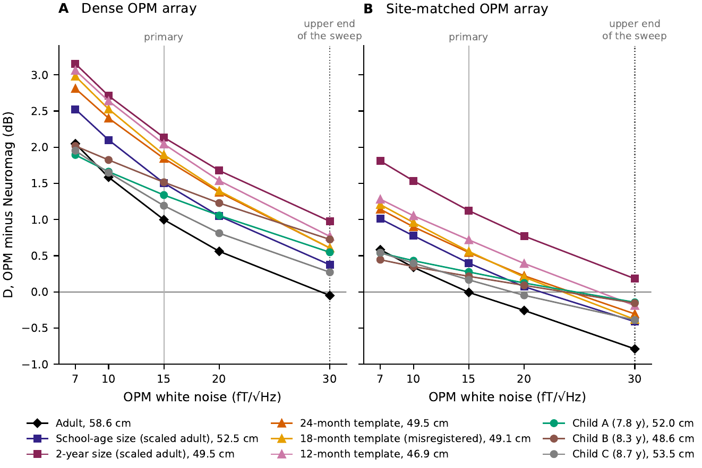
S7. The spike study: design, results and localization
S7.1. The exploratory design
The detection study ran the noise model in the time domain, with each component scaled so that its in-band covariance equaled that of the same head’s frequency-domain model and the room field not projected out (Table S18). The spike was the spike-wave complex of Hunold et al. (2016), digitized, stretched in time by 0.75, 1 and 1.5 (3 morphologies) and passed through the band-pass filter of the data.
Spikes were placed at 72 locations stratified by depth below the scalp (10–20, 20–30, 30–45 and 45–70 mm; 18 locations per band) and by orientation (3 bands from radial to tangential; 6 locations per depth and orientation stratum). Each location received 18 focal-dipole events, at 6 strengths of 10, 20, 40, 80, 160 and 320 nAm, each with every morphology, and patch events of 10 mm radius carrying the same total moments with the unstretched morphology. This gave 1,296 focal and 432 patch events, 1,728 per anatomy, injected in random order and identically in every array. The adult’s locations lay 24 in the frontal lobe, 14 in the parietal, 14 in the temporal, 12 in the cingulate, 6 in the insula and 2 in the occipital lobe. Their median depths were 16.9, 26.0, 36.8 and 51.7 mm in the four bands.
Every array, Neuromag and the dense and site-matched optically pumped magnetometer (OPM) arrays, was read by two detectors, and Neuromag also by its magnetometers and by its gradiometers alone (5 sensor sets per anatomy). Both detectors whitened the data with a Ledoit–Wolf covariance (Ledoit and Wolf, 2004) estimated from null data and filtered them with the spike templates. The oracle detector tests the whitened, template-filtered projection on the true field pattern at the true peak (one-sided; per-trial false-positive probability 0.001).
The practical detector takes at every sample the largest normalized output over the templates and the candidate field patterns of a cortical grid that excludes the true sources (Table S18). Its local maxima at least 0.25 s apart are events. A spike counts as detected when an event above threshold lies within ±50 ms of its peak; the same events count as false on null data. Like the oracle, it uses the simulated morphologies and the true forward model (main text, Section 2.5). Whether it is equally idealized for every array was not tested in the exploratory run. The pre-specified run’s mismatch variant tests one departure (Section S7.5), and focal on-scalp patterns may be more sensitive to forward-model and coregistration error.
Its thresholds for a nominal 1 false event per minute were set on independent null data and frozen. On held-out null data they gave 0.40–1.55 false events per minute across sensor sets and anatomies (Table S9). In the adult, the practical detector needed 1.83–2.08 times the oracle’s strength for half detection at 10–20 mm.
| Head | Neuromag (306 channels) | Site-matched OPM array | Dense OPM array |
|---|---|---|---|
| Adult | 1.30 | 0.70 | 0.95 |
| School-age size | 1.40 | 0.50 | 1.05 |
| 2-year size | 0.40 | 0.65 | 1.20 |
| 24-month template | 0.70 | 1.55 | 1.30 |
| 12-month template | 1.20 | 0.95 | 0.85 |
| Reported separately (Section S10) | |||
| 18-month template | 0.90 | 1.45 | 1.10 |
| Child A | 0.90 | 1.35 | 0.75 |
| Child B | 0.80 | 1.55 | 0.70 |
| Child C | 1.20 | 0.70 | 0.75 |
A band’s S50 pools its 324 focal events, the morphologies over its 18 locations; patch events enter neither S50 nor the paired tests. The paired ratio S50Neuromag/S50OPM is above 1 when the OPM array needs less strength (Section S1), and interval bounds printed as 1.00 are classed by their unrounded values throughout. The adult was placed at its measured pose and the smaller heads at top contact (main text, Section 2.5), so the adult’s spike results are not placed by the same rule as theirs.
The exploratory spike endpoint, chosen after the analyses (Section S8.2), was the dense array against Neuromag’s 306 channels in the 10–20 mm band with the practical detector. It was tested with the two-sided exact sign-flip test on per-location differences in detection counts, Holm-adjusted (Holm, 1979) over the 9 anatomies, with the paired S50 ratio and its location-bootstrap interval as the effect size. This band, array and detector were chosen from the 24 comparisons per OPM array of each anatomy, a selection that the correction over anatomies does not control. The detection family has 48 comparisons per anatomy: two OPM arrays against Neuromag’s 306 channels, its gradiometers and its magnetometers, with both detectors, in 4 depth bands. The localization family has 40 comparisons per anatomy: two OPM arrays, focal and patch sources at two strengths, and the endpoints. These are the dipole error, the two errors of dynamic statistical parametric mapping (dSPM), and joint detection and localization with the study’s dSPM or with the dipole.
The sign-flip test uses the locations whose difference in detection counts is not zero, and p is smallest when all of them favor one array. With a band’s 18 locations that smallest p is 7.6 \(\times 10^{-6}\), and p < 0.05 needs at least 6 such locations. With equal differences the test is the exact sign test. Of 18 locations, 14 must then favor one array for p < 0.05 (p = 0.031; with 13, p = 0.096), and 16 for the first Holm step over 9 anatomies, p < 0.0056 (p = 0.0013). Of the pre-specified 36 locations (12 per orientation stratum), 25 are needed (p = 0.029) and 27 for the first Holm step (p = 0.0039).
Unequal differences can move p either way: the adult’s 11 locations favoring the OPM against 1 favoring Neuromag gave p = 0.0039, against 0.0063 had the differences been equal. Beyond 20 non-zero locations the run estimated p from 20,000 random sign patterns (resolution 5 \(\times 10^{-5}\)); the p values reported for the pre-specified run are exact (Section S7.5). These values follow from the design alone; power and a minimal detectable S50 ratio depend on how detection varies between locations and were not computed. The pilot runs that preceded the pre-specified run (Section S8.2) do not estimate power either.
S7.2. Results of the exploratory run
The exploratory run had one noise realization per event and an endpoint chosen after the analyses; it is superseded as evidence by the pre-specified run (main text, Section 3.6; Section S7.5). Here and in Section S7.5, counts and ranges over the anatomies include the 18-month template and the three school-aged children, which the main text reports separately (Section S10). Every anatomy’s S50 point estimate favored the dense array 10–20 mm below the scalp (Fig. S12A; Table S10). So did the per-location counts under a Holm correction over the 9 anatomies (largest adjusted p 0.022, child A, whose S50 interval spans 1). The anatomies are not independent replications.
Table S10 sets the oracle’s S50 ratio, the quantity most directly tied to the detectability metric, beside the practical detector’s. The oracle’s ratios were the larger in 7 of the 9 anatomies (not in the 18-month template and child C), as expected where the oracle’s advantage is not diluted by the scan over times and candidates. The adult’s detection curves are shown in Fig. S13.
| Head | S50 (nAm), Neuromag / dense | Ratio, dense | Locations, OPM / Neuromag | p | Holm p | Ratio, site-matched | Ratio, dense, oracle |
|---|---|---|---|---|---|---|---|
| Adult | 47 / 34 | 1.36 [1.10, 1.58] | 11 / 1 | 0.0039 | 0.015 | 1.16 [0.88, 1.44] | 1.55 [1.22, 1.74] |
| School-age size | 53 / 33 | 1.60 [1.31, 1.87] | 13 / 0 | 0.00024 | 0.0017 | 1.27 [0.99, 1.52] | 1.62 |
| 2-year size | 61 / 37 | 1.65 [1.41, 1.87] | 17 / 0 | <0.0001 | 0.00014 | 1.60 [1.21, 1.82] | 1.69 |
| 24-month template | 43 / 30 | 1.44 [1.20, 1.65] | 14 / 2 | 0.0015 | 0.0076 | 1.22 [1.00, 1.42] | 1.51 |
| 12-month template | 43 / 29 | 1.46 [1.21, 1.84] | 14 / 1 | 0.00049 | 0.0029 | 1.28 [1.09, 1.46] | 1.89 |
| Reported separately (Section S10) | |||||||
| 18-month template | 36 / 27 | 1.33 [1.16, 1.62] | 16 / 0 | <0.0001 | 0.00024 | 1.10 [1.02, 1.28] | 1.30 |
| Child A | 61 / 48 | 1.27 [0.93, 1.63] | 11 / 4 | 0.022 | 0.022 | 1.05 [0.75, 1.40] | 1.53 |
| Child B | 65 / 55 | 1.18 [1.02, 1.51] | 12 / 3 | 0.0085 | 0.017 | 1.06 [0.87, 1.35] | 1.31 |
| Child C | 52 / 36 | 1.43 [1.06, 1.62] | 14 / 2 | 0.0037 | 0.015 | 1.08 [0.92, 1.31] | 1.36 |
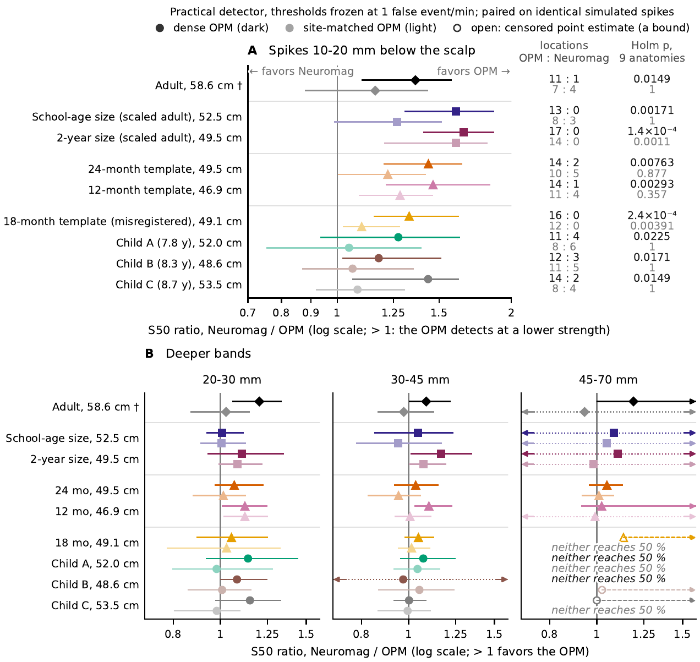
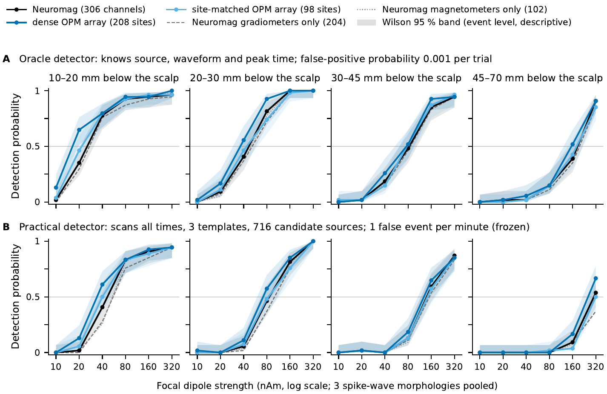
A Bonferroni correction over the 24 comparisons per OPM array from which the endpoint was chosen (threshold 0.0021) is the stricter test. All four principal smaller heads passed it, and the adult did not (p = 0.0039). Of the heads of Section S10, the 18-month template passed and the three children did not. Over all 48 comparisons per anatomy (threshold 0.0010), three of the principal smaller heads passed (not the 24-month template), as did the 18-month template.
Because the frozen thresholds gave unequal false-event rates on the held-out null data (Table S9), every detector’s threshold was also reset to 1 false event per minute on those data and the stored simulations were re-evaluated. Fitted and evaluated on the same data, this check is in-sample for the rate and does not establish equal operating points on new data; the pre-specified run uses separate evaluation null data for that. The dense array’s ratios at 10–20 mm stayed above 1 in every anatomy (1.21–1.63). In the adult the ratio was 1.40 [1.12, 1.59] (12 locations favoring the OPM, 1 Neuromag, p = 0.0022), against 1.36 at the frozen thresholds.
The site-matched array’s S50 interval lay above 1 in 4 anatomies. Its detection counts, however, differed (uncorrected p < 0.05) in only 2, the 2-year scaled adult and the 18-month template, and not in the adult (p = 0.40) or any child.
Deeper spikes leaned the same way less consistently (Fig. S12B). The location counts favored the dense array in 25 of the 27 deeper band-and-anatomy cells (1 tie, 1 against). The S50 point estimates at 20–30 mm were above 1 in 9 of 9 anatomies. All six cells with p < 0.05 favored the OPM, and none survived that Bonferroni correction. With the endpoint’s rule, a Holm correction over the anatomies band by band, 1 survived: the adult’s 45–70 mm band (adjusted p 0.035). Section S8.2 compares the deeper cells across model versions.
Of the adult’s 324 superficial focal events (54 per strength), 19 were detected only by the dense array (6, 12 and 1 at 20, 40 and 160 nAm) and 1 only by Neuromag (at 40 nAm). The dense array and Neuromag detected 7 and 1 events at 20 nAm and 33 and 22 at 40 nAm, and nearly the same numbers from 80 nAm up (45 and 45, 50 and 49, 51 and 51). The OPM’s gain was thus concentrated on weak superficial spikes; its weight in a clinical recording depends on how many real discharges are that weak, which the design’s strength grid cannot tell.
At the adult’s 18 locations of each band, the dense array’s median detectability ratio was 1.45, 1.16, 1.09 and 1.05 from the shallowest to the deepest band, and the oracle’s paired S50 ratio 1.55, 1.29, 1.09 and 1.20. The two agreed in direction in every band, and closely at 30–45 mm. The oracle ratio exceeded the detectability ratio most in the deepest band, whose interval ([1.00, 1.42]) lies just above 1 because few events are detected at the lower strengths and S50 is interpolated from them. Exact agreement is not expected, because the detectability ratio is a median of per-location ratios whereas the S50 ratio pools the band’s detection curves. The oracle is the better-behaved of the two spike quantities, and the pre-specified run reports it beside the practical detector (Table S11).
S7.3. Localization
Localization was examined at 24 locations with focal and patch sources of 80 and 320 nAm, one event per source type and strength at each location (24 per condition, unstretched morphology), in independent null data. The inverse used a single-compartment boundary-element model (BEM), whereas the simulation used three layers. Each location’s inverse also carried one of 8 coregistration-error draws of 2 mm and 2°, the same for every array. This error displaced the adult’s sources by a median of 2.9 mm, and by 2.1–3.2 mm over the anatomies. The noise covariance was a Ledoit–Wolf estimate from 5 min of null data. The source grid had fixed orientations at 5-mm spacing (2,114–3,821 sources) and excluded the true source vertices.
Equivalent current dipoles (ECDs) were fitted with MNE-Python (Gramfort et al., 2013) at least 5 mm inside the inner skull. dSPM (Dale et al., 2000), with depth weighting 0.8 and a regularization set by an assumed signal-to-noise ratio (SNR) of 3, was computed in the study’s implementation and in MNE-Python’s, at the true peak sample. The error is the distance from the true source (a patch’s center) to the dipole or to the dSPM peak, read on the MRI through the perturbed transform. Joint success is detection by the practical detector (thresholds for 1 false event per minute from 10 min of null data) with an error of at most 10 mm. Paired error differences were tested with the Wilcoxon signed-rank test and joint success with an exact McNemar test.
Both dSPM implementations use fixed orientations on the same grid, the same noise covariance, a depth exponent of 0.8, \(\lambda^{2}\) = 1/9, a source covariance scaled to the whitened rank and dSPM normalization. They differ in the depth weighting. The study’s implementation uses the whitened gains of all of an array’s channels, without a limit. MNE-Python’s is limited at its default of 10 and uses the unwhitened gains of the gradiometers, or of the magnetometers where there are none (the OPM arrays). Both are reported, because the paired dSPM differences depend on this choice.
Dipole fits of detected 320-nAm focal spikes had median errors of 3.7–7.6 mm in every array and anatomy. The errors include every event, detected or not, because selecting on detection would select on each system’s own noise. At 80 nAm, all 108 estimates of Fig. S14 rest mostly on undetected events, whose errors are those of noise. Of the 216 median error differences, 20 were exactly zero, because the dSPM peaks of both systems often fall on the same vertex of the shared 5-mm grid, and 30 were positive (Neuromag closer).
The localization family holds 360 paired comparisons: the 216 error differences of Fig. S14 (Wilcoxon signed-rank tests) and 72 joint-success comparisons each for the dipole fit and the study’s dSPM (exact McNemar tests; Fig. S15). Of the 360, 65 had p < 0.05, where 18 would be expected by chance. Among the error differences these were 6 for the dipole fit, 27 for MNE-Python’s dSPM and 21 for the study’s. Among the joint-success comparisons they were 0 with the dipole fit and 11 with the study’s dSPM, all favoring the OPM array. Of the 65 with p < 0.05, 61 favored an OPM array, 3 had a zero median difference and 1 favored Neuromag. Of the same 65, 28 concerned mostly undetected 80-nAm sources, and the two dSPM implementations share their events. A Bonferroni correction within anatomy and array (threshold 0.0025, the 20 comparisons of one anatomy and OPM array) left eight comparisons, all error differences. Six of them were at 80 nAm, where most sources go undetected, and no joint-success comparison survived a correction. A correction over all 360 left none.
The adult’s dSPM gain for 320-nAm patches depended on the implementation: −5.6 mm (p = 0.054) with the study’s estimator and −1.0 mm (p = 0.22) with MNE-Python’s. Joint success assumes the event time is known, because localization is read at the true peak sample.
Every event received a dipole. Under declared criteria, a dipole or dSPM error above 30 mm is gross, and a dipole confidence volume above 10 cm³ is unconstrained. Over the 864 events per system, Neuromag had 332 gross dipole errors (27 among its 456 detected events). The dense array had 310 (44 among 501) and the site-matched array 325 (38 among 475), that is, 5.9–8.8 % of detected events. Gross errors of the study’s dSPM among detected events numbered 77 for Neuromag (17 %), 39 for the dense array (7.8 %) and 36 for the site-matched array (7.6 %).
Of all gross errors (dipole and the study’s dSPM, three arrays), 87 % belonged to undetected events and 73 % to 80-nAm events. The denominators differ between arrays because each array detects different events, so these rates are described, not compared. No localization difference was established in any anatomy.
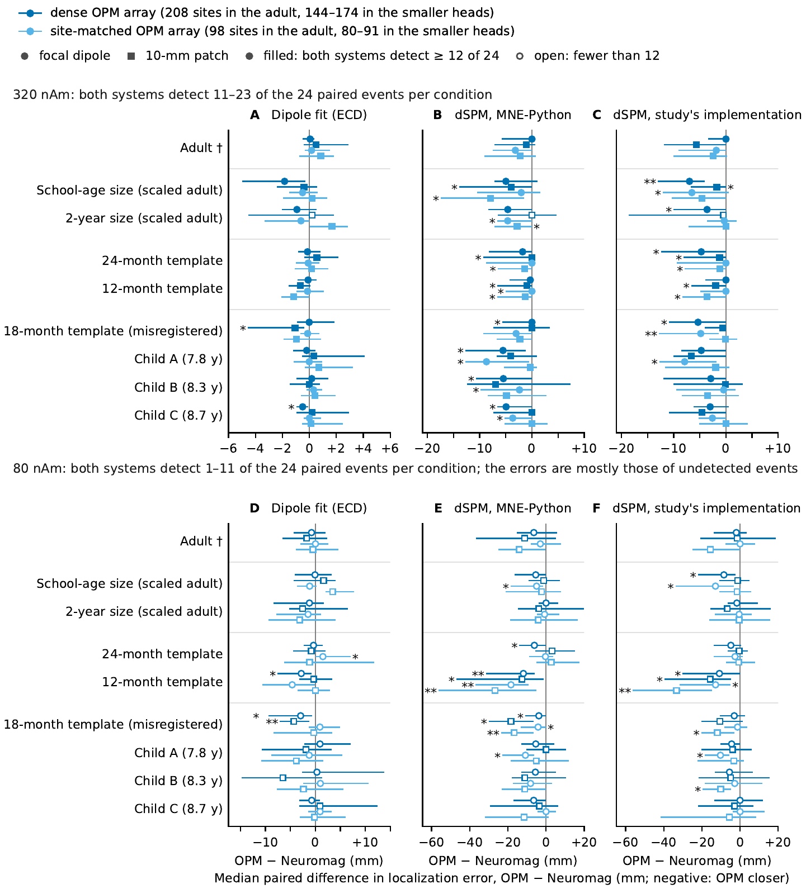
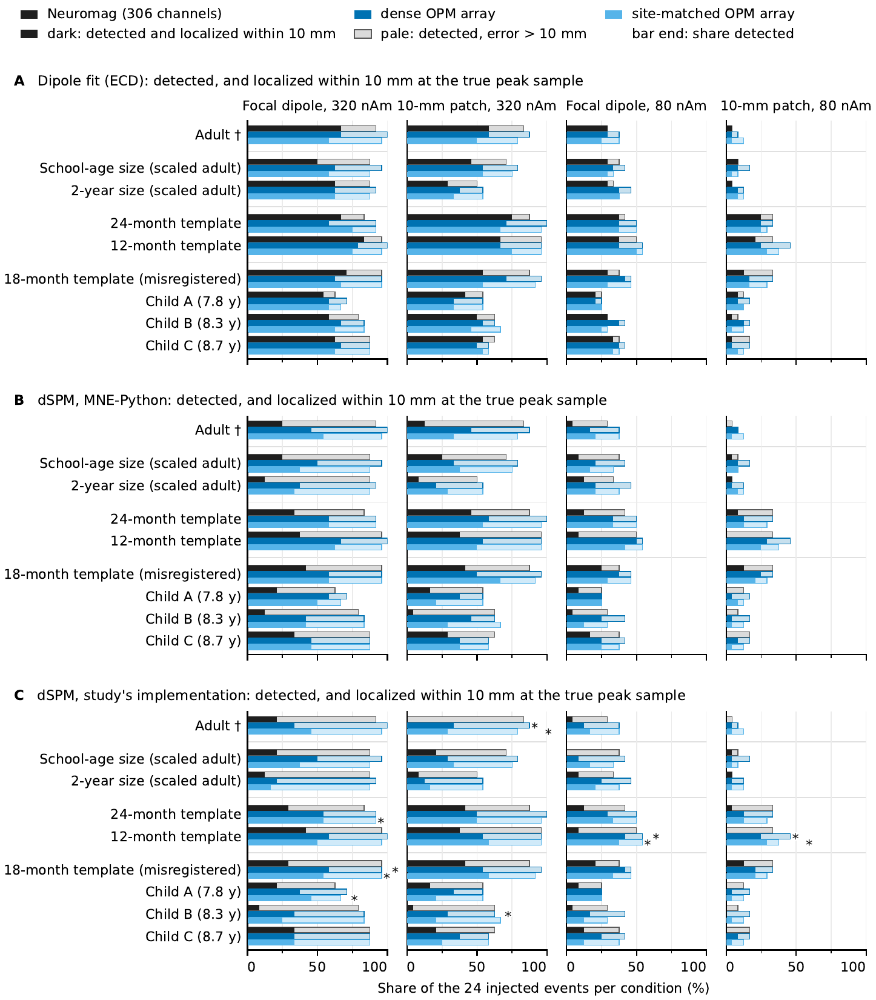
S7.4. Head motion
Head motion and slippage of the OPM cap were bounded rather than simulated in time, on the adult and the 24- and 12-month templates at top contact. The head was displaced in the fixed helmet by up to 10 mm or rotated about the head origin. The dense OPM cap was rotated on the head by up to 3°, lifting sensors that would enter the scalp. Each case was evaluated with the matched filter of the reference geometry (uncompensated) and with the displaced geometry known. A sustained 10-mm drop in the fixed helmet reduced Neuromag’s detectability by 1.64–1.72 dB uncompensated and by 0.36–0.39 dB with the displaced geometry known. The latter is comparable to an uncompensated 3° slip of the OPM cap (0.12–0.46 dB). A 60-s time course of exact rigid motion checked the field-artifact model only; motion in the spike simulations, and its interaction with detection thresholds, was not simulated.
S7.5. The pre-specified run
The pre-specified run (main text, Sections 2.5 and 3.6; Fig. 10) is summarized in Table S11. Its dense-array columns with the practical detector are the declared endpoint (thresholds frozen for a nominal 1 false event per minute); the oracle, mismatch and site-matched columns are secondary.
| Head | S50 (nAm), Neuromag / dense | Ratio, dense | Locations, OPM / Neuromag | Holm p | Oracle, ratio | Mismatch, ratio | Site-matched, ratio (Holm p) |
|---|---|---|---|---|---|---|---|
| Adult | 50 / 35 | 1.45 [1.21, 1.68] | 24 / 0 | <0.0001 | 1.39 [1.22, 1.55] | 1.50 [1.30, 1.67] | 1.30 [1.10, 1.46] (0.035) |
| School-age size | 45 / 31 | 1.44 [1.26, 1.58] | 25 / 1 | <0.0001 | 1.61 [1.46, 1.76] | 1.39 [1.23, 1.52] | 1.28 [1.10, 1.43] (0.048) |
| 2-year size | 54 / 37 | 1.47 [1.24, 1.62] | 27 / 1 | <0.0001 | 1.62 [1.40, 1.78] | 1.49 [1.26, 1.67] | 1.16 [1.05, 1.35] (0.0031) |
| 24-month template | 35 / 27 | 1.28 [1.18, 1.45] | 28 / 2 | <0.0001 | 1.51 [1.31, 1.84] | 1.42 [1.26, 1.68] | 1.06 [0.95, 1.17] (0.067) |
| 12-month template | 41 / 29 | 1.39 [1.25, 1.56] | 29 / 1 | <0.0001 | 1.48 [1.30, 1.84] | 1.43 [1.25, 1.60] | 1.30 [1.15, 1.48] (0.0084) |
| Reported separately (Section S10) | |||||||
| 18-month template | 41 / 29 | 1.43 [1.26, 1.61] | 30 / 1 | <0.0001 | 1.62 [1.41, 1.90] | 1.44 [1.25, 1.65] | 1.30 [1.15, 1.48] (<0.0001) |
| Child A | 51 / 40 | 1.27 [1.07, 1.38] | 14 / 3 | 0.010 | 1.29 [1.09, 1.52] | 1.23 [1.06, 1.41] | 0.99 [0.84, 1.14] (1.0) |
| Child B | 57 / 42 | 1.35 [1.15, 1.56] | 21 / 2 | <0.0001 | 1.27 [1.11, 1.52] | 1.23 [1.02, 1.48] | 1.08 [0.99, 1.20] (1.0) |
| Child C | 50 / 39 | 1.30 [1.15, 1.43] | 25 / 2 | <0.0001 | 1.34 [1.17, 1.55] | 1.34 [1.18, 1.50] | 1.10 [1.00, 1.27] (0.15) |
The declaration fixed seven elements, and the run followed it at a single code version, complete in all nine anatomies. First, every random stream was spawned from the root seed 20261005 by anatomy and purpose (10 purposes), and the noise replicates of an event from its event stream. Only the random sign patterns of the sign-flip test use the fixed seed 0 of the test’s implementation, in every anatomy, family and replicate (Table S17). Second, 36 locations per anatomy were newly drawn in the 10–20 mm band (12 in each of the 3 orientation strata), vertex-disjoint from the exploratory ones where a stratum allows. The pools of 109–2,249 candidate vertices per stratum excluded the 72 exploratory locations, so no stratum shared a vertex. The nearest exploratory location lay 2.7 mm away at the closest and a median 13.6–18.6 mm away over the anatomies.
The locations’ median depth was 12.9–17.4 mm; the adult’s lay 17 in the frontal lobe, 10 in the parietal, 8 in the temporal and 1 in the occipital lobe. Each location received 18 focal events per replicate (6 strengths of 10–320 nAm, morphologies stretched by 0.75, 1 and 1.5): 648 events per replicate, 3,240 per anatomy and 29,160 in all. Third, the test is the two-sided sign-flip test, exact up to 20 non-zero location differences and otherwise estimated from 20,000 random sign patterns. Fourth, the effect size is the paired S50 ratio with a location-bootstrap interval of 1,000 resamples.
Where the run estimated a sign-flip p (resolution 5 \(\times 10^{-5}\)), the estimate was zero if no sampled pattern reached the observed statistic. Because the differences are integer counts, the exact p over all \(2^{n}\) sign patterns follows from the distribution of the signed sum. We computed it from the stored differences for all 540 cells of anatomy and comparison, reproducing exactly the 47 cells that the run had enumerated itself. Every p reported here and in the main text is this exact value. The run’s estimates differ from it by at most 0.0073 and give the same Holm decision for every anatomy in all 25 families; where an estimate was zero, the exact Holm-adjusted value reaches 0.00040. Section S8.2 records the check of the endpoint code made before the run.
Fifth, separate null segments, 70 min in all, served the whitener (10 min), the threshold fit (20 min; 20 events above each frozen threshold) and the held-out check (20 min). A fourth segment (20 min) evaluated the false-event rates of the frozen and the re-fitted thresholds. Sixth, each event has 5 noise replicates, the first carrying the endpoint and the others measuring Monte Carlo variability. The practical detector’s dictionary, drawn anew for this run, held 452–728 candidate patterns over the anatomies (Table S18). The oracle’s realized per-trial false-positive probability on the held-out null was 0.00093–0.0011 over the anatomies and arrays, against the declared 0.001.
Seventh, the declared mismatched detector’s templates lie at the geometric midpoints of the injected stretches (0.87 and 1.22: 2 templates), each injected morphology lying 13–18 % away from the nearest template. Its candidate patterns come from a single-compartment BEM. One coregistration error per anatomy (2 mm, 2°), shared by all arrays, displaced the candidate dictionary by a median of 1.6–4.9 mm at the spike locations over the anatomies (0.7–5.9 mm over all locations). Its thresholds were set for a nominal 1 false event per minute on the calibration null and frozen and, like the primary detector’s, re-fitted on the held-out null as a secondary analysis.
In each of the five Monte Carlo replicates the endpoint passed in all nine anatomies (45 of 45 anatomy-replicate cells; Table S12). Over the replicates the ratio ranged from 1.15 to 1.49, with an SD within an anatomy of 0.041–0.089 in log2 units (in percent: main text, Section 3.6; Table S12). Pooled over the replicates (3,240 events per anatomy), the Holm-adjusted p was at most 0.0013. The oracle’s pooled ratios were 1.35–1.60 and the mismatched detector’s 1.23–1.45, each family passing in all nine anatomies. The pre-specified ratio was 0.89–1.14 times the exploratory one, below it in 6 of the 9 anatomies, and the exploratory point estimate lay within the pre-specified interval in 6.
| Head | Ratio per replicate | SD (%) | Largest p | Pre-specified / exploratory | Pooled ratio | Pooled locations, OPM / Neuromag | Pooled Holm p |
|---|---|---|---|---|---|---|---|
| Adult | 1.45, 1.46, 1.36, 1.39, 1.41 | 2.9 | <0.0001 | 1.06 | 1.41 [1.22, 1.56] | 33 / 0 | <0.0001 |
| School-age size | 1.44, 1.36, 1.49, 1.49, 1.39 | 4.2 | <0.0001 | 0.90 | 1.44 [1.32, 1.53] | 35 / 0 | <0.0001 |
| 2-year size | 1.47, 1.38, 1.44, 1.43, 1.34 | 3.7 | <0.0001 | 0.89 | 1.42 [1.25, 1.53] | 34 / 1 | <0.0001 |
| 24-month template | 1.28, 1.21, 1.23, 1.21, 1.37 | 5.4 | <0.0001 | 0.89 | 1.25 [1.18, 1.37] | 34 / 1 | <0.0001 |
| 12-month template | 1.39, 1.27, 1.31, 1.32, 1.30 | 3.6 | <0.0001 | 0.95 | 1.31 [1.22, 1.46] | 33 / 2 | <0.0001 |
| Reported separately (Section S10) | |||||||
| 18-month template | 1.43, 1.30, 1.32, 1.49, 1.46 | 6.2 | <0.0001 | 1.07 | 1.39 [1.30, 1.53] | 35 / 0 | <0.0001 |
| Child A | 1.27, 1.16, 1.24, 1.26, 1.19 | 4.0 | 0.031 | 0.99 | 1.22 [1.09, 1.33] | 26 / 7 | 0.0013 |
| Child B | 1.35, 1.33, 1.25, 1.15, 1.29 | 6.4 | 0.0011 | 1.14 | 1.27 [1.12, 1.44] | 26 / 6 | <0.0001 |
| Child C | 1.30, 1.24, 1.27, 1.35, 1.25 | 3.5 | 0.00011 | 0.90 | 1.28 [1.17, 1.38] | 30 / 2 | <0.0001 |
Over the 27 anatomy-and-array combinations, the frozen thresholds realized 0.65–1.75 false events per minute on the held-out null (Table S13) and 0.65–2.25 on the evaluation null. The exact Poisson interval excluded the target in five combinations on each null. The thresholds re-fitted on the held-out null realized 0.45–2.05 per minute on the evaluation null (four combinations excluding the target).
Between the endpoint’s two arrays, an approximate equal-rate test gave p < 0.05 in two of the nine anatomies with the frozen thresholds, the 24-month template and child B, once in each direction (Table S13). With the re-fitted thresholds it gave p < 0.05 in one (the school-age scaled adult). The test is a conditional binomial test on the two event counts and only indicative, because the arrays share the background and room noise. Over all 72 such tests (two OPM arrays, two detectors, two threshold rules, nine anatomies), 9 had p < 0.05. The endpoint thus compares the arrays at a nominal false-event rate, not at equal realized rates. With the re-fitted thresholds the endpoint’s ratios (main text, Section 3.6) had Holm-adjusted p of at most 0.010 and were 1.20–1.49 pooled over the replicates.
| Head | Neuromag (306 channels) | Dense OPM array | Site-matched OPM array | Equal-rate p, dense vs Neuromag (frozen; re-fitted) |
|---|---|---|---|---|
| Adult | 1.20 / 1.05 / 0.95 | 1.10 / 1.20 / 1.20 | 1.20 / 1.30 / 1.05 | 0.77; 0.54 |
| School-age size | 1.60 / 1.35 / 0.70 | 0.90 / 1.25 / 1.60 | 1.00 / 0.65 / 0.70 | 0.89; 0.011 |
| 2-year size | 1.15 / 1.45 / 1.25 | 1.40 / 1.40 / 1.00 | 1.30 / 1.55 / 1.15 | 1.0; 0.55 |
| 24-month template | 1.75 / 2.25 / 1.45 | 1.20 / 1.25 / 1.15 | 1.10 / 1.15 / 0.80 | 0.022; 0.49 |
| 12-month template | 1.35 / 1.05 / 0.90 | 0.75 / 1.00 / 1.40 | 1.15 / 0.75 / 0.45 | 1.0; 0.18 |
| Reported separately (Section S10) | ||||
| 18-month template | 0.75 / 0.80 / 1.15 | 0.65 / 1.15 / 1.25 | 1.25 / 1.00 / 0.70 | 0.34; 0.89 |
| Child A | 0.95 / 0.75 / 0.80 | 1.15 / 0.90 / 0.90 | 1.40 / 1.35 / 1.05 | 0.73; 0.86 |
| Child B | 0.70 / 0.70 / 1.35 | 1.55 / 1.40 / 1.05 | 1.65 / 1.55 / 1.20 | 0.044; 0.47 |
| Child C | 1.10 / 1.40 / 1.35 | 1.60 / 2.15 / 1.50 | 0.75 / 1.65 / 2.05 | 0.096; 0.79 |
Each system’s S50 with the mismatched detector over its S50 with the primary one was 1.02–1.14 for Neuromag and 1.01–1.12 for the dense array (Table S14), and 0.98–1.13 for the site-matched array (not tabulated). The interval lay above 1 in 5 of the 9 anatomies for Neuromag, 2 for the dense array and 4 for the site-matched array. The change of the S50 ratio, Neuromag’s cost over the dense array’s, was 0.91–1.11, every interval spanning 1 (0.96–1.03 pooled over the replicates). No differential cost was established, which does not show that the two costs are equal.
The mismatched detector’s ratios were 1.23–1.50 with its frozen thresholds (Holm-adjusted p at most 0.026) and 1.16–1.51 with thresholds re-fitted on the held-out null. Child B then did not pass in replicate 0 (Holm-adjusted p 0.072) but did pass pooled over the replicates (9 of 9 anatomies passing).
| Head | Ratio, mismatched detector | Locations, OPM / Neuromag | Holm p | Cost, Neuromag | Cost, dense array | Ratio change | Re-fitted thresholds: ratio (Holm p) |
|---|---|---|---|---|---|---|---|
| Adult | 1.50 [1.30, 1.67] | 27 / 0 | <0.0001 | 1.09 [1.01, 1.22] | 1.05 [0.99, 1.17] | 1.03 [0.91, 1.16] | 1.48 [1.27, 1.64] (<0.0001) |
| School-age size | 1.39 [1.23, 1.52] | 28 / 2 | <0.0001 | 1.03 [0.97, 1.11] | 1.07 [0.99, 1.14] | 0.97 [0.89, 1.05] | 1.42 [1.26, 1.54] (<0.0001) |
| 2-year size | 1.49 [1.26, 1.67] | 29 / 0 | <0.0001 | 1.06 [1.02, 1.14] | 1.05 [0.99, 1.13] | 1.01 [0.93, 1.09] | 1.51 [1.28, 1.69] (<0.0001) |
| 24-month template | 1.42 [1.26, 1.68] | 29 / 0 | <0.0001 | 1.14 [1.05, 1.29] | 1.03 [0.98, 1.09] | 1.11 [0.99, 1.27] | 1.39 [1.24, 1.65] (<0.0001) |
| 12-month template | 1.43 [1.25, 1.60] | 28 / 2 | <0.0001 | 1.04 [0.97, 1.10] | 1.01 [0.97, 1.06] | 1.02 [0.95, 1.10] | 1.43 [1.26, 1.63] (<0.0001) |
| Reported separately (Section S10) | |||||||
| 18-month template | 1.44 [1.25, 1.65] | 28 / 1 | <0.0001 | 1.03 [0.98, 1.09] | 1.02 [0.96, 1.10] | 1.01 [0.93, 1.09] | 1.38 [1.21, 1.58] (<0.0001) |
| Child A | 1.23 [1.06, 1.41] | 15 / 4 | 0.026 | 1.06 [1.01, 1.12] | 1.10 [1.01, 1.17] | 0.97 [0.89, 1.08] | 1.26 [1.10, 1.43] (0.010) |
| Child B | 1.23 [1.02, 1.48] | 20 / 7 | 0.0089 | 1.02 [0.93, 1.11] | 1.12 [1.00, 1.25] | 0.91 [0.79, 1.06] | 1.16 [1.01, 1.39] (0.072) |
| Child C | 1.34 [1.18, 1.50] | 26 / 4 | <0.0001 | 1.08 [1.02, 1.15] | 1.05 [0.94, 1.15] | 1.03 [0.94, 1.16] | 1.27 [1.15, 1.44] (<0.0001) |
With the practical detector (Table S15), the site-matched array’s S50 interval lay above 1 in 5 anatomies and spanned 1 in 4. Holm over the anatomies passed in 5 (the adult, school-age scaled adult, 2-year scaled adult, 18-month template and 12-month template) and not in the 24-month template, child A, child B and child C. With re-fitted thresholds 5 anatomies passed, with the oracle 4 (ratios 0.99–1.43) and with the mismatched detector 6 (ratios 1.03–1.36).
Pooled over the replicates, 7 anatomies passed with the practical detector (ratios 1.06–1.27; failing: child A and child B), 7 with the oracle and 6 with the mismatched detector. In replicate 0, the site-matched array’s test passed in none of the school-aged children under any detector. With the practical detector their ratios were 0.99–1.10, every interval including 1. Pooled over the replicates, child C passed with the practical detector and the oracle but not with the mismatched detector.
| Head | Practical: ratio | Locations, OPM / Neuromag | Holm p | Re-fitted: ratio (Holm p) | Oracle: ratio (Holm p) | Mismatched: ratio (Holm p) | Pooled: ratio (Holm p) |
|---|---|---|---|---|---|---|---|
| Adult | 1.30 [1.10, 1.46] | 17 / 5 | 0.035 | 1.32 [1.13, 1.45] (0.017) | 1.21 [1.02, 1.34] (0.23) | 1.26 [1.08, 1.40] (0.0038) | 1.26 [1.11, 1.36] (0.00066) |
| School-age size | 1.28 [1.10, 1.43] | 20 / 7 | 0.048 | 1.32 [1.15, 1.45] (0.0097) | 1.43 [1.26, 1.57] (0.00015) | 1.22 [1.09, 1.33] (0.0033) | 1.27 [1.13, 1.37] (0.0015) |
| 2-year size | 1.16 [1.05, 1.35] | 19 / 2 | 0.0031 | 1.12 [1.03, 1.29] (0.0097) | 1.18 [1.09, 1.33] (0.00013) | 1.13 [1.06, 1.25] (0.00085) | 1.19 [1.10, 1.35] (<0.0001) |
| 24-month template | 1.06 [0.95, 1.17] | 18 / 6 | 0.067 | 1.05 [0.94, 1.17] (0.10) | 1.17 [1.02, 1.38] (0.066) | 1.19 [1.04, 1.39] (0.0038) | 1.11 [1.03, 1.22] (0.0054) |
| 12-month template | 1.30 [1.15, 1.48] | 20 / 4 | 0.0084 | 1.29 [1.14, 1.48] (0.017) | 1.25 [1.04, 1.49] (0.011) | 1.27 [1.12, 1.44] (0.0075) | 1.21 [1.13, 1.34] (0.00062) |
| Reported separately (Section S10) | |||||||
| 18-month template | 1.30 [1.15, 1.48] | 23 / 2 | <0.0001 | 1.30 [1.14, 1.47] (0.00024) | 1.27 [1.10, 1.44] (<0.0001) | 1.36 [1.21, 1.51] (<0.0001) | 1.26 [1.15, 1.40] (<0.0001) |
| Child A | 0.99 [0.84, 1.14] | 8 / 8 | 1.0 | 0.99 [0.85, 1.14] (1.0) | 1.01 [0.85, 1.20] (1.0) | 1.03 [0.88, 1.18] (1.0) | 1.06 [0.95, 1.19] (0.39) |
| Child B | 1.08 [0.99, 1.20] | 13 / 6 | 1.0 | 1.05 [0.95, 1.20] (1.0) | 0.99 [0.87, 1.11] (1.0) | 1.07 [0.97, 1.19] (1.0) | 1.11 [1.01, 1.22] (0.24) |
| Child C | 1.10 [1.00, 1.27] | 15 / 6 | 0.15 | 1.12 [1.01, 1.28] (0.10) | 1.12 [1.00, 1.28] (0.55) | 1.06 [0.98, 1.18] (0.23) | 1.12 [1.02, 1.26] (0.038) |
Both spike runs used the fixed helmet and the modeled noise only. The spike study therefore does not show that fit causes a detection benefit in children, or how detection would fare under the noise-model alternatives of Section S3. The pre-specified run also does not test the deeper bands, localization or a covariance mismatch of the detector. Its detector remains idealized in the ways named in the main text (Sections 2.5 and 4.4), and the mismatch variant is one declared departure, not a model of clinical review.
S8. Parameters and analysis choices
S8.1. Resamples, seeds and time-domain parameters
Table S16 gives the bootstrap resamples behind every interval family, Table S17 the random seed of every simulation and resampling and Table S18 the time-domain model of both spike runs, with each run’s value where the two differ.
The code and data deposit (main text, Data and code availability) gives every target’s detectabilities and depth below the scalp at full precision, for the adult comparison, the smaller heads and the helmet fitted at the adult’s gap. It also gives each target’s membership of each depth bin, depth stratum, spike depth band and orientation stratum as half-open bins. Every count stated in the text, such as child B’s targets shallower than 10 mm, can therefore be reproduced exactly.
| Intervals (sections) | Unit resampled | Resamples |
|---|---|---|
| Adult comparison: every estimator, lobes, triaxial control (main text, Sections 3.1–3.3; Sections S1, S3.3) | parcel labels (70) | 1,000 |
| Adult comparison: OPM sensitive axes along the stored normals (Section S3.1) | parcel labels | 1,000 |
| Adult comparison: sensor noise, background, Neuromag noise, head position, scalp gap, joint grid (main text, Table 3; Section S3.6) | parcel labels | 200 |
| Adult comparison: extended sources (in the deposit, not reported here) | parcel labels | 200 |
| Adult comparison: frequency bands (Section S3.1) | targets | 200 |
| Adult comparison: depth bins (main text, Section 3.3) | parcel labels present in the bin | 1,000 |
| Adult comparison: distance and orientation bins; medial wall | — | none (medians only) |
| Noise model against the measured covariance (main text, Section 3.2; Section S3.4) | parcels | 1,000 |
| Noise-model sensitivity analyses (main text, Sections 3.1 and 3.2; Section S3.6) | parcels | 1,000 |
| Smaller heads, top contact, dense array: \(D\), \(\Delta\), depth strata (main text, Section 3.4; Sections S5.1, S5.4, S10.2) | parcels of each head | 1,000 |
| Smaller heads: site-matched array (Sections S5.1, S10.2) | parcels of each head | 200 |
| Smaller heads: centered, back, laterally centered and true-contact placements; both helmets scaled with the head (Sections S5.1, S5.2) | parcels of each head | 200 |
| Smaller heads: channel-count control (Section S5.2) | parcels of each head | 200 |
| Smaller heads: peak-channel and mean-power SNR, shifted and rotated placements, sensitivity analyses, extended sources (Sections S5.1, S6) | — | none (medians only) |
| Helmet fitted at the adult’s gap: dense array in the fixed and the fitted helmet (main text, Section 3.5; Section S5.3) | parcels of each head | 1,000 |
| Helmet fitted at the adult’s gap: the other comparisons (Sections S5.3, S10.3) | parcels of each head | 200 |
| Spikes, exploratory run and its re-analysis with re-fitted thresholds: S50, paired S50 ratio (Sections S7.1, S7.2) | locations | 1,000 |
| Spikes, pre-specified run (main text, Section 3.6; Section S7.5) | locations | 1,000 |
| Localization: paired error differences (Section S7.3) | events | 2,000 |
| Motion thresholds (Section S7.4) | 32 draws, not resampled | 10th to 90th percentiles |
| Analysis | Seed |
|---|---|
| Adult comparison: background sources and targets; parcel bootstrap of the extended sources; random target subset of the lead-field convergence checks; target bootstrap of the frequency bands; parcel bootstrap of the OPM-axis comparison; random sources of the check of lead fields near the inner-skull mesh; random sensors and dipoles of the check of the BEM against a sphere | 2026; 1; 2; 2026; 2026; 11; 5 |
| Adult comparison: parcel bootstrap of the depth bins | 2026 |
| Adapted benchmarks: Hunold et al. (2016), sources and background; its sensor noise; Goldenholz et al. (2009), noise-source grid | 2016; 7; 2009 |
| Smaller heads: parcel bootstrap of the scaled adults and templates; of the children; centers of the extended sources; depth-stratum intervals of the usable-cortex analysis (in the deposit, not reported here); parcel bootstrap of the helmet fitted at the adult’s gap | 7; 8; 2027; 0; 2026 |
| Noise-model sensitivity analyses; noise model against the measured covariance (parcel bootstraps and surrogates) | 2026; 2026 |
| Spikes, exploratory run (the same in all 9 anatomies): detection; location bootstrap; localization; the localization study’s held-out null data; the localization study’s bootstrap of the comparisons with Neuromag’s subsets | 44; 7; 45; 46; 47 |
| Spikes, pre-specified run: root seed, with one stream per anatomy and purpose (10 purposes) and the 5 noise replicates of every event spawned from it (key: anatomy, purpose, replicate); random sign patterns of the sign-flip test (fixed, every anatomy and replicate) | 20261005; 0 |
| Head motion: draws of the field coupling; time course | 2027; 2028 |
| Element | Setting |
|---|---|
| Cortical background | independent Gaussian series, power spectrum \(1/f^{x}\) (\(x = 1\)) above 0.5 Hz and flat below; band-filtered, scaled to \(\sigma^{2} a_i\) |
| Room field | the 8 coefficients synthesized from the empty-room cross-spectra (Welch, 4,096-sample segments), scaled to the fitted covariance; not projected out |
| Sensor noise | white (OPM 15 fT/√Hz); no OPM frequency response (a first-order 100-Hz response only in the band analysis) |
| Filter, sampling | 1–40 Hz, Butterworth of order 4, zero phase, also applied to the spike templates; simulated at 600.6 Hz, every 4th sample kept (no further anti-aliasing filter): 150.2 Hz |
| Segments | 30 s, generated 2 s longer at each end and cropped; one realization shared by all arrays; a spike every 2 s |
| Candidate field patterns | Poisson-disk grid of 10-mm spacing without the true sources, drawn separately in each run; patterns in the exploratory / pre-specified run: 716 / 728 (adult); 536 / 537 and 447 / 454 (scaled adults); 517 / 525, 478 / 485 and 441 / 452 (templates, oldest first); 702 / 693, 623 / 642 and 671 / 694 (children A–C) |
| Null data | detection, both runs: whitener 10 min, thresholds 20 min (then frozen), held-out 20 min; pre-specified run only: evaluation 20 min; localization (exploratory run): covariance 5 min, thresholds 10 min, held-out 10 min |
S8.2. Analysis choices made after results were known
Two noise conditions were named in the analysis configuration before any simulation: sensor plus brain noise, the primary condition, and the room field projected out. Whole-cortex results are reported in both conditions and regional results with sensor plus brain noise. No endpoint, test or margin of the original study was declared before its analyses. Three exploratory endpoints were chosen after them. The first is the dense optically pumped magnetometer (OPM) array’s detectability ratio against Neuromag’s 306 channels in the adult. The second is \(\Delta\) of the dense array against the same comparator, at top contact in the fixed helmet and in the helmet scaled with the head about the laterally centered head. It is taken against the adult placed by the same rule and reported descriptively. The third is the spike endpoint (the dense array against Neuromag’s 306 channels at 10–20 mm with the practical detector), chosen from 24 comparisons per OPM array (Section S7.1).
The regions were chosen from the epilepsy literature (Section S4.2), and rankings among them are exploratory. Top contact, the primary placement of the fixed helmet, was chosen after the adult’s whole-cortex results were known. The laterally centered placement and the helmet scaled about the laterally centered head were added after the first pediatric results were known, to remove the templates’ lateral offset. The 12 source-blind placements bound the choice of top contact (Sections S5.1 and S5.2). Further analyses were added after the main results were known, without changing the model. They are the check of the noise model against the measured Neuromag covariance and the sensitivity analyses (Sections S3.4–S3.6), the MRI quality check of the school-aged children (Section S4.3) and the helmet fitted at the adult’s gap (Section S5.3). Each reproduces the results it builds on to within rounding.
The pre-specified spike run was designed before it was run (main text, Sections 2.5 and 2.6) and is the only pre-specified test of the study. Pilot runs on child A, with 18 locations and test seeds, preceded it and prompted doubling its locations to 36 (main text, Section 2.6). They do not estimate power, and their outputs were not kept; the pre-specified declaration describes 18 locations as underpowered. Before the run, the pre-specified endpoint code, applied to the exploratory run’s stored states, reproduced its location counts, p values and S50 ratios exactly in all 36 comparisons (nine anatomies, both OPM arrays, both detectors).
The model also changed while results were known. Earlier versions took the OPM sensitive axes from the adult’s stored outer-skin normals, which are nearly radial, placed the adult’s head surface outside its MRI scalp (median 1.1 mm) and checked the OPM cell’s clearance from the head differently. The final model puts every head’s surface on its MRI scalp. The clearance rule therefore moves only the sites the anatomy demands, and the OPM standoff is the same (6.99–7.00 mm) above every head’s own MRI scalp (the templates’ scalp convention differs from the adult’s; Section S4.3). The final model takes the sensitive axes from that surface’s own triangles (Section S3.1).
This change to equal OPM standoff was made after the pediatric results were known. It lowered \(\Delta\) by 0.11–0.27 dB in the scaled adults and templates (the school-aged children exist only in the final model) and made their laterally centered scaled-helmet \(\Delta\) negative. It raised the adult’s projected dense ratio: 1.048 with the earlier construction, 1.073 with the final sites and the earlier axes, and 1.115 in the final model. It also strengthened the adult’s exploratory spike result at 10–20 mm (earlier 8/2 locations favoring the OPM/Neuromag, p = 0.037, S50 ratio 1.29; final 11/1 and 1.36).
Every array change redraws the noise, because an array’s channel count changes the random stream. The dense array’s advantage at 10–20 mm held in every version, but which deeper cells reached p < 0.05 varied between versions (Section S7.2). The site-matched array’s deficit at 45–70 mm in two earlier versions (0/7 and 1/9 locations, the latter with p = 0.016) does not reach p < 0.05 in the final model (3/6 locations, p = 0.40). Results that depend on these choices are post hoc, the earlier results were not retained, and persistence across versions is not replication.
S8.3. Literature search and parameter provenance
The OPM studies of epilepsy, the clinical ones of Table S19 among them, were found by searching PubMed and Europe PMC on 4 October 2026. The searches combined optically pumped magnetometers, OPM-MEG or on-scalp MEG with epilepsy, interictal or epileptiform activity, seizures, children or simulation. They were complemented by author searches, by the reference lists of Feys et al. (2025), Schwartz et al. (2025) and Shen et al. (2026) and by a web search for preprints. For each study we extracted the design, patients, regions, OPM technology, comparator, definition of the signal-to-noise ratio and results. Of the 15 studies (12 clinical and three modeling), the extracted values of 13 were checked against the full text (version of record or accepted manuscript). Those of Feys et al. (2022) were checked against the full text of its preprint. For Ren et al. (2025), whose full text could not be accessed, only the abstract was read, and its row in Table S19 rests on the abstract. The model’s counterparts in that table come from the same simulations as every other result of the study.
The Neuromag noise values and the 18-mm spacing between the coils and the helmet surface come from the manufacturer’s datasheet (Elekta Neuromag, n.d.). The 7-mm standoff of the OPM’s sensing center comes from the description of the sensors by Jas et al. (2026) and from device papers (Alem et al., 2023; Osborne et al., 2018). The 10-mm cell is a modeling choice, an averaging volume rather than a device cell, whose effect on the field at its peak is at most 1.9 %. Four further settings are declared simulation choices without a device specification. They are the primary OPM noise of 15 fT/√Hz (the middle level of the noise sweep), the 17-mm minimum OPM spacing (standing for a sensor package of 12–17 mm), the 100-Hz OPM response and the \(1/f^{x}\) spectrum of the background.
The OPM noise sweep, 7–30 fT/√Hz, is a sensitivity analysis. The upper end of the sweep, 30 fT/√Hz, is not an empirically validated or clinical bound. It lies near the empty-room OPM floor of the recording of Jas et al. (2026), read from Fig. 9 of its preprint as 29–31 dB re fT²/Hz. That corresponds to 28–35 fT/√Hz if the unstated reference is 1 fT²/Hz; this broadband value is not matched to the model’s 1–40 Hz band. The bar values of Fig. 8 of that preprint, the other input read from its figures, were taken from the 600-dpi raster with a reading precision of about ±2 %.
S9. Clinical OPM studies of epilepsy and model analogs
Table S19 sets each clinical study of epilepsy with optically pumped magnetometers (OPMs) beside the model quantity that comes closest to it (main text, Section 4.3). It includes the studies that compare OPMs with a superconducting quantum interference device (SQUID) system or report a regional result; Section S8.3 describes the search and extraction. The comparisons are qualitative. A study and its model analog share at most a comparator, a kind of metric or an age range, so they are compared in direction only; the last column names what is not matched.
Two differences apply to every row. The studies recorded real discharges in patients, whereas the model computes the noise-free fields of single cortical dipoles against modeled noise in anatomies of people without epilepsy. The model’s OPMs are idealized single-axis magnetometers with white noise, and its Neuromag is a VectorView geometry with T3 coil definitions, TRIUX datasheet noise and no signal-space separation. Where a row compares signal-to-noise ratios (SNRs), the model’s peak-channel SNR divides by the modeled noise, which includes a cortical background. The studies divide by a recorded baseline, which also holds cardiac, ocular, muscle and other transients that the model does not contain.
| Study: patients (ages); regions | OPM sensors | Comparator; SNR measure | Reported, OPM vs comparator | Model analog: quantity, comparator, anatomy, value | Direction | Not matched |
|---|---|---|---|---|---|---|
| Feys et al. (2022): 5 children (5–11 years); extratemporalp | Rb, 32 single-axis, cap around the focusp; noise not reported | 102 SQUID magnetometers (MEGIN TRIUXp); peak over baseline SD of each IED at the channel where the averaged IED peaksp | Amplitude 2.3–4.6× in 5/5; SNR 27–60 % higher in 4/5, no difference in 1 | Peak-channel SNR against the 102 magnetometers; school-age scaled adult at top contact in the adult helmet: peak-channel SNR ratio OPM/magnetometers, in dB: site-matched +1.66, dense +2.15 | Same: OPM higher | Sensor count and placement; sensor noise; real IEDs per child vs a median over all cortex; extratemporal foci; children vs the adult’s anatomy scaled to school-age size; helmet position and band not reported |
| Feys et al. (2023): 1 infant (5 months; corrected age 2 months); right centro-parietal | Rb, 26, cap, 4-mm gap; noise not reported | None (other children’s recordings); SNR not defined | IED amplitude 2.5 pT; SNR 11.1 | No counterpart: no SQUID recording of the infant, and absolute values where the model gives ratios between systems; the model’s youngest head is the 12-month template (head circumference 46.9 cm, against 33 cm) | – | Comparator; metric; age and head size; microcephaly and hemorrhage |
| Hillebrand et al. (2023): 7 (3 children, 10–12 years; 4 adults); temporal, temporo-parietal, sensorimotor | Rb, 6 dual-axis (12 channels), 7–13 fT/√Hz | TRIUX neo planar gradiometers after tSSS; automatic-detector z-score per IED | 0.92–0.98×d; “comparable” | Peak-channel SNR against the 204 planar gradiometers, adult: site-matched 0.86 [0.84, 0.89], dense 0.92 [0.89, 0.95] | Same: Neuromag higher | Sensor count and axes; sensor noise (7–13 vs 15 fT/√Hz); detector z-score of real IEDs; tSSS; regions vs all cortex; children and adults vs one adult; band not reported |
| Badier et al. (2023): 1 adult (33 years); left temporal pole (hippocampus-only spikes seen by neither) | 4He, 4 on the scalp, < 50 fT/√Hz on 2 axes | 4 nearest magnetometers of a 248-channel 4D system; event maximum over baseline SD | Single spike: SNR 7 vs 5; amplitude 5 pT (text) or 2.5 pT (legend) vs 1.1 pT | Peak-channel SNR against the 102 magnetometers, adult, all cortex: site-matched 1.14 [1.08, 1.19], dense 1.23 [1.17, 1.27]; temporal pole, detectability against the magnetometers: site-matched 0.88, dense 1.23; hippocampus not modeled | Same by peak channel; temporal pole: same (dense), opposite (site-matched) | Sensor count; sensor noise (< 50 vs 15 fT/√Hz); nearest channels of another SQUID system vs Neuromag’s best; one spike per session; peak-channel value over all cortex; band (2–70 Hz) |
| Feys et al. (2024): 1 adult (20–30 yearsp); right amygdala | Rb, 48 (116 channels), rigid helmet; noise not reported | None (SEEG reference); SNR not defined | SNR 2.75 vs 11.1–16.7 in earlier neocortical OPM data (other patients) | Within one system, detectability of parahippocampal over superior temporal sources, adult: dense 0.36, Neuromag 0.36; amygdala not modeled | Same, and equally for Neuromag | Amygdala vs a cortical proxy; patients compared across studies vs regions within one head; helmet off the scalp, implants; sensor count; noise not reported |
| Feys et al. (2025): 11 (8–63 years); temporal lobe epilepsy (anterior, medial, basal, lateral and posterior sources) | Rb, 43–53 (98–127 channels) incl. 4 face OPMs; noise not reported | 102 SQUID magnetometers (system not named); peak over baseline SD after averaging similar IEDs, peak channel | SNR higher in 1, similar in 2 of 3 tested; nominally lower in the 3 with mesial or polar sourcesd; OPM SNR temporal 9.4 vs extratemporal 14.3 | Peak-channel SNR against the 102 magnetometers, adult, all cortex: site-matched 1.14 [1.08, 1.19], dense 1.23 [1.17, 1.27]; mesial temporal cortex, detectability against the magnetometers: site-matched 0.96, dense 1.18; within the dense array, temporal over frontal lobe 0.73 | Mixed (study) vs OPM higher (model, peak channel); mesial: same (site-matched), opposite (dense); within the OPM: same | Sensor count and axes, face OPMs; regional model values are detectability, not peak-channel SNR; mesial structures vs a cortical proxy; frontal lobe for extratemporal; ages 8–63 vs one adult; noise and band not reported |
| Study: patients (ages); regions | OPM sensors | Comparator; SNR measure | Reported, OPM vs comparator | Model analog: quantity, comparator, anatomy, value | Direction | Not matched |
|---|---|---|---|---|---|---|
| Ren et al. (2025)a: 46 (mean 23.7, SD 8.7 years; 29 male); regions not given | 128 channels, whole-scalp; sensor type and noise not given | SQUID, separate examinations (system and channels not given); SNR definition not given | IED detection: no significant difference (McNemar test); accuracy 91.3 % relative to SQUID (AC1 0.892). In the 39 patients with IEDs on both systems: sensors closer to the scalp and amplitude higher (both p < 0.001), SNR higher (p = 0.003). Sublobar localization nearly consistent; in the 24 with a single dipole cluster, the two systems’ cluster centroids 12.16 ± 5.90 mm apart | SNR, comparator unknown: peak-channel SNR, adult, against the 102 magnetometers site-matched 1.14, dense 1.23; against the best of all 306 channels site-matched 0.85, dense 0.90. Detection: detectability against all 306 channels, site-matched 1.01 [0.99, 1.03], dense 1.14 [1.12, 1.17]. Localization: no counterpart | SNR: depends on the comparator; detection and localization: not comparable | Comparator channels, SNR definition, sensors, noise, band and regions not given; per-patient IED detection vs single-dipole detectability; distance between the two systems’ dipole clusters, which the model does not compute; separate examinations vs identical simulated events; 46 patients vs one adult |
| Schwartz et al. (2025): 7 + 1 adults (22–48 years; 41 years); 5 focal temporal, 2 generalized; deep mesial (SEEG case) | 4He, 4 on the scalp, < 45 fT/√Hz on 2 axes | 4 nearest channels of a 275-channel CTF system, type not named (4D magnetometers for the SEEG case); per-IED maximum over 20-s baseline SD | Amplitude 2.3× (group); SNR 6.72 vs 8.37; deep spike 6.8 vs 9.0 | Peak-channel SNR against the best of all 306 channels, adult: site-matched 0.85 [0.83, 0.87], dense 0.90 [0.88, 0.93]; detectability with 30-fT/√Hz OPMs, the upper end of the model’s noise sweep: site-matched 0.933 [0.907, 0.949], dense 1.008 [0.993, 1.027] | Same: Neuromag higher, except the dense array at 30 fT/√Hz (interval including 1) | Sensor count; sensor noise (< 45 vs at most 30 fT/√Hz); nearest channels of an unnamed type vs Neuromag’s best channel; per-IED SNR in sequential sessions; temporal and generalized foci vs all cortex; band (6–70 and 3–70 Hz) |
| Shen et al. (2026): 68 (6–60 years); 51 temporal, 17 extratemporal | 64 dual-mode (128 channels), < 15 fT/√Hz, rigid helmet | None; sublobar concordance with iEEG | Concordance 80.1 % temporal vs 92.0 % extratemporal | No counterpart for concordance. For the authors’ explanation (depth, helmet distance): within the dense array, detectability of temporal over frontal targets 0.73 (Neuromag 0.79); with a 6-mm OPM gap, detectability against Neuromag dense 1.04, site-matched 0.96 (without the gap, 1.14 and 1.01) | – | Metric (localization concordance); comparator; dual-axis sensors in a rigid helmet, modeled only as a uniform gap; extratemporal group vs the frontal lobe; ages 6–60 vs one adult; band (2–70 Hz) |
S10. The 18-month template and the school-aged children
This section reports the 18-month infant template and school-aged children A, B and C. The template is set apart because the MRI check classed it as misregistered (a misfit of its whole white surface to its T1 image), and the children because their near-scalp anatomy could not be verified. They are the four smaller heads that the main text reports separately from its four principal smaller heads (main text, Section 2.2), and they form a sensitivity analysis that none of the main text’s principal estimates includes. Figs. S16–S18 redraw main-text Figs. 8–10 with all nine anatomies.
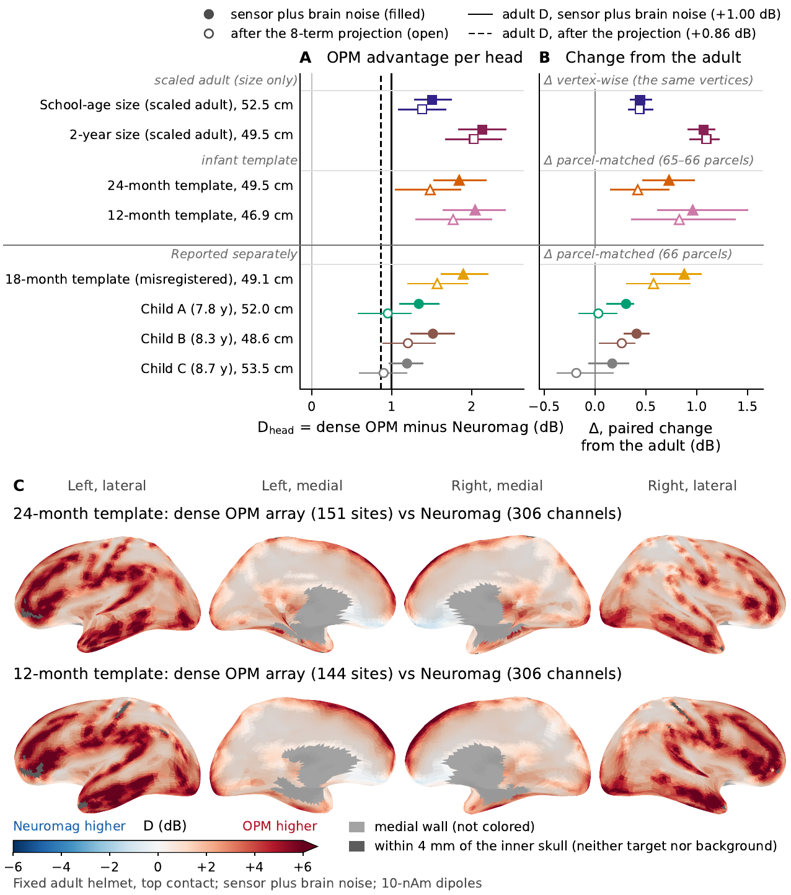
S10.1. Why these anatomies are reported separately
The MRI check (Section S4.3) classed the 18-month template as misregistered. Its white surface fitted the T1 contrast best after a 2.3-mm shift, with an edge translation of 1.7 mm, both beyond the 1-mm tolerance (other templates’ best shift, 0.5 mm). Whether this reflects a displaced surface or the weaker contrast of an average image was not settled, and the surface was not repaired, so the template’s results may rest on a displaced white surface.
The children needed three further steps (Sections S4.1 and S4.3). Their inner skull, placed by the dataset a median of 0.8–2.5 mm below the scalp over the upper head, was moved inward; their fiducials were transferred from the adult; and their surfaces were checked against their T1 images. The check found the surfaces registered to the images and the modeled scalp about as far inside the T1 head boundary as the adult’s (all three children passed the check). It cannot detect a head boundary that the images themselves place too deep, settle whether the white surface is anatomically correct within a few millimeters of the scalp, or test tissue thicknesses against norms for age.
How many targets lie near the scalp depends on the scalp used: child B had 247 targets shallower than 10 mm below the modeled scalp but 47 below the MRI head boundary. The source rule, applied at the modeled inner skull, left out 94–100 % of the children’s white-surface area within 8 mm of the scalp, so their results do not describe a near-scalp cortex (Section S4.3).
With a single-compartment BEM, which has no skull or scalp conductivity but keeps the modeled inner skull as its boundary, the difference between each of these heads’ median \(D\) and the adult’s changed by −0.06 to +0.01 dB (Section S4.1). The skull and scalp layers thus do not carry these differences; the check does not validate the location of the inner skull, which both models share.
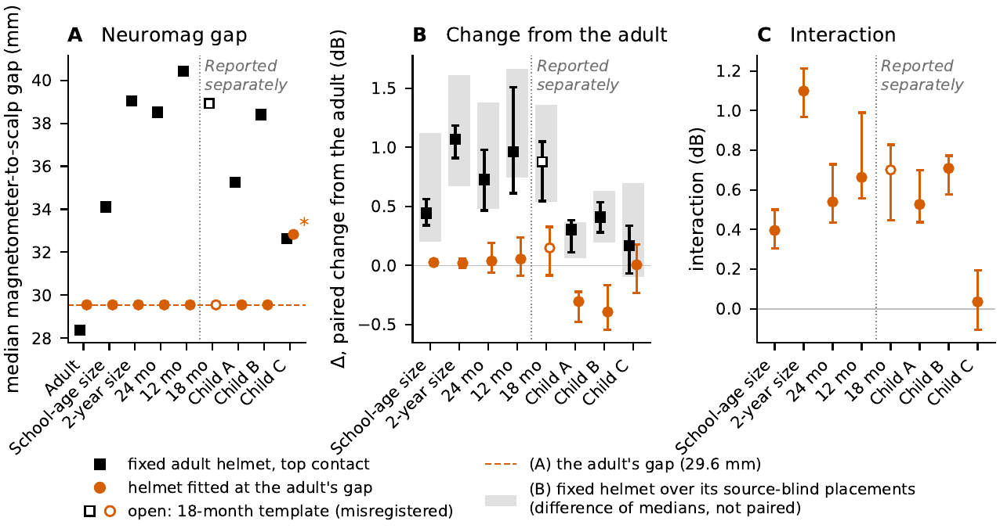
S10.2. The fixed adult helmet
In the fixed adult helmet at top contact (Fig. S16), the dense array’s \(D\) was +1.00 [+0.82, +1.17] dB in the adult. It was +1.89 [+1.61, +2.21] dB in the 18-month template, and +1.34 [+1.09, +1.59], +1.51 [+1.23, +1.79] and +1.19 [+0.96, +1.39] dB in children A, B and C. \(\Delta\) was +0.88 [+0.54, +1.05] dB in the template, within the principal smaller heads’ range (+0.44 to +1.07 dB). It lay below that range in the children: +0.30 [+0.11, +0.38], +0.41 [+0.28, +0.54] and +0.17 [−0.07, +0.34] dB in A, B and C.
Over the source-blind placements (Table S7, differences of medians), \(\Delta\) stayed above zero in the 18-month template, child A and child B, and spanned −0.10 to +0.70 dB in child C. The crossed bands, which set any placement of a head against any of the adult’s, included zero in every child but not in the template. With the room field projected out, \(\Delta\) was +0.57 [+0.31, +0.94] dB in the template. It was +0.03 [−0.17, +0.22], +0.26 [+0.04, +0.39] and −0.19 [−0.38, +0.18] dB in children A, B and C, child B’s interval above zero. The children’s site-matched arrays, also with the room field projected out, gave −0.06, −0.17 and −0.10 dB, each interval including zero.
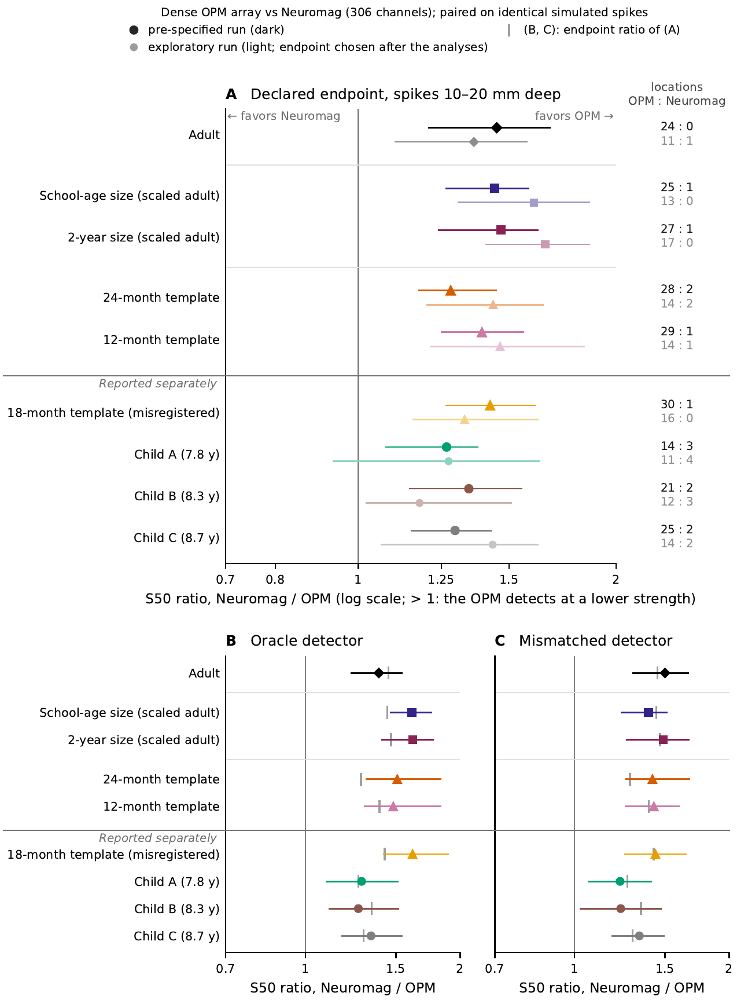
S10.3. The helmet fitted at the adult’s gap
In the helmet fitted at the adult’s gap (Fig. S17; Table S6), the interaction was +0.04 to +0.71 dB in these heads, every interval above zero except that of child C. At the adult’s gap, \(\Delta\) was negative in children A and B (−0.30 [−0.48, −0.22] and −0.39 [−0.54, −0.17] dB). At equal OPM site count it was +0.16 [−0.12, +0.23] and +0.16 [−0.10, +0.41] dB, intervals that include zero: their fewer OPM sites lowered \(\Delta\) by more than the remaining head-size gain. Fitted instead at the adult’s top-contact gap, these two children differed from the adult at top contact in the fixed helmet by −0.11 [−0.40, +0.06] and −0.22 [−0.35, +0.01] dB, intervals that include zero.
In child C, the 18-mm Dewar spacing bound before the adult’s gap was reached. The fitted helmet stopped at a median gap of 32.8 mm, against 32.6 mm in the fixed helmet (Table S5). With these two gaps nearly coinciding, its \(\Delta\) at the adult’s gap was +0.01 [−0.23, +0.18] dB. Its within-head contrast was negative (−0.12 [−0.20, −0.02] dB), a contrast of construction rather than of gap (Section S5.3). Fitted at the top-contact gap, child C differed from the adult at top contact by +0.30 [−0.02, +0.61] dB. In the 18-month template, the interaction (+0.70 [+0.45, +0.83] dB) lay within the principal smaller heads’ range (+0.40 to +1.10 dB). Its \(\Delta\) was +0.15 [−0.08, +0.33] dB at the adult’s gap and, fitted at the top-contact gap, +0.21 [+0.08, +0.38] dB against the adult at top contact.
S10.4. Simulated interictal spikes
The pre-specified run declared all nine anatomies, so these four entered its Holm adjustment (Section S7.5; Fig. S18; per head in Tables S11–S15). With the declared endpoint, the S50 ratio Neuromag/OPM was 1.27–1.43, every location-bootstrap interval above 1. The dense array detected spikes 10–20 mm deep at 21–30 % lower strength, and the sign-flip test favored it in each of these anatomies (Holm-adjusted p at most 0.010). Across the five noise replicates, the ratio’s standard deviation within an anatomy was 3.5–6.4 % (pooled ratios 1.22–1.39). The oracle detector gave ratios of 1.27–1.62, and thresholds re-fitted on held-out null data gave 1.27–1.44.
The mismatched detector changed the ratio by a factor of 0.91–1.03, every interval including 1. With re-fitted thresholds, its test favored the dense array in three of these anatomies but not in child B (Holm-adjusted p = 0.072), where it favored the dense array when the replicates were pooled. The site-matched array’s ratios were 0.99–1.30. Its test favored the site-matched array in the 18-month template (Holm-adjusted p < 0.0001) but not in children A, B and C. At the frozen thresholds, the approximate equal-rate test between the endpoint’s two arrays (Section S7.5) gave p < 0.05 in one of these anatomies, child B, and with the re-fitted thresholds in none.
References
- , , , , , , , , , , , , , , , , 2023. An integrated full-head OPM-MEG system based on 128 zero-field sensors. Front. Neurosci. 17, 1190310. https://doi.org/10.3389/fnins.2023.1190310.
- , , , , , , , , , , , , , , , , 2023. Helium optically pumped magnetometers can detect epileptic abnormalities as well as SQUIDs as shown by intracerebral recordings. eNeuro 10, ENEURO.0222-23.2023. https://doi.org/10.1523/ENEURO.0222-23.2023.
- , , , , , , , 2000. Dynamic statistical parametric mapping: combining fMRI and MEG for high-resolution imaging of cortical activity. Neuron 26, 55–67. https://doi.org/10.1016/S0896-6273(00)81138-1.
- , , , , , , , , , , , , 2006. An automated labeling system for subdividing the human cerebral cortex on MRI scans into gyral based regions of interest. NeuroImage 31, 968–980. https://doi.org/10.1016/j.neuroimage.2006.01.021.
- , n.d. Elekta Neuromag TRIUX. Datasheet NM23083B-A. Elekta Oy. Helsinki. https://natmeg.se/onewebmedia/NM23083B-A%20Elekta%20Neuromag%20TRIUX%20datasheet.pdf (accessed 4 October 2026).
- , , , , , , , , , , , 2024. Attenuated processing of vowels in the left temporal cortex predicts speech-in-noise perception deficit in children with autism. J. Neurodev. Disord. 16, 67. https://doi.org/10.1186/s11689-024-09585-2.
- , , , , , , , , , , , 2025. Perception of vowel sounds in children with autism spectrum disorders and typically developing children (MEG/ERF study). [dataset] OpenNeuro, ds005234, version 2.2.0. https://doi.org/10.18112/openneuro.ds005234.v2.2.0.
- , , , , , , , , , 2022. On-scalp optically pumped magnetometers versus cryogenic magnetoencephalography for diagnostic evaluation of epilepsy in school-aged children. Radiology 304, 429–434. https://doi.org/10.1148/radiol.212453.
- , , , , , , , , 2023. On-scalp magnetoencephalography for the diagnostic evaluation of epilepsy during infancy. Clin. Neurophysiol. 155, 29–31. https://doi.org/10.1016/j.clinph.2023.08.010.
- , , , , , , , , , , , 2024. On-scalp magnetoencephalography based on optically pumped magnetometers can detect mesial temporal lobe epileptiform discharges. Ann. Neurol. 95, 620–622. https://doi.org/10.1002/ana.26844.
- , , , , , , , , , , , , , , 2025. On-scalp magnetoencephalography based on optically pumped magnetometers to investigate temporal lobe epilepsy. Epilepsia 66, e142–e151. https://doi.org/10.1111/epi.18439.
- , 2012. FreeSurfer. NeuroImage 62, 774–781. https://doi.org/10.1016/j.neuroimage.2012.01.021.
- , , , 2008. Magnetoencephalography for clinical pediatrics: the effect of head positioning on measurement of somatosensory-evoked fields. Clin. Neurophysiol. 119, 1923–1933. https://doi.org/10.1016/j.clinph.2008.04.291.
- , , , , , , , 2009. Mapping the signal-to-noise-ratios of cortical sources in magnetoencephalography and electroencephalography. Hum. Brain Mapp. 30, 1077–1086. https://doi.org/10.1002/hbm.20571.
- , , , , , , , , , , , 2013. MEG and EEG data analysis with MNE-Python. Front. Neurosci. 7, 267. https://doi.org/10.3389/fnins.2013.00267.
- , , , , , , , , , , , , 2023. Non-invasive measurements of ictal and interictal epileptiform activity using optically pumped magnetometers. Sci. Rep. 13, 4623. https://doi.org/10.1038/s41598-023-31111-y.
- , 1979. A simple sequentially rejective multiple test procedure. Scand. J. Stat. 6, 65–70.
- , , , , , 2016. EEG and MEG: sensitivity to epileptic spike activity as function of source orientation and depth. Physiol. Meas. 37, 1146–1162. https://doi.org/10.1088/0967-3334/37/7/1146.
- , , , , , , 2026. Signal-to-noise ratio of event-related fields in on-scalp and off-scalp MEG. bioRxiv preprint 2026.08.17.744953. https://doi.org/10.64898/2026.08.17.744953.
- , , 2004. A well-conditioned estimator for large-dimensional covariance matrices. J. Multivar. Anal. 88, 365–411. https://doi.org/10.1016/S0047-259X(03)00096-4.
- , , , , , , , 2026. Quantifying cerebellar signal detectability in MEG and EEG in epilepsy using anatomically informed source modeling. NeuroImage 333, 121930. https://doi.org/10.1016/j.neuroimage.2026.121930.
- , , , , 2021. Structural templates for imaging EEG cortical sources in infants. NeuroImage 227, 117682. https://doi.org/10.1016/j.neuroimage.2020.117682.
- , , , , 2018. Fully integrated, standalone zero field optically pumped magnetometer for biomagnetism. Proc. SPIE 10548, 105481G. https://doi.org/10.1117/12.2299197.
- , , , , , , , , , 2025. A comparative study on the detection and localization of interictal epileptiform discharges in magnetoencephalography using optically pumped magnetometers versus superconducting quantum interference devices. NeuroImage 312, 121232. https://doi.org/10.1016/j.neuroimage.2025.121232.
- , , , , 2016. A database of age-appropriate average MRI templates. NeuroImage 124, 1254–1259. https://doi.org/10.1016/j.neuroimage.2015.04.055.
- , , , , , , , 2025. Potential of 4He OPM-MEG for detecting interictal epileptic activity: a comparison with SQUID-MEG. Epilepsia Open 10, 1660–1672. https://doi.org/10.1002/epi4.70139.
- , , , , , , , , , , , , , , , , , , , , 2026. Assessment of the utility of optically pumped magnetometer magnetoencephalography in preoperative localization of refractory epilepsy: a prospective study. Epilepsia 67, 3937–3954. https://doi.org/10.1002/epi.70273.
- , , , , , 2010. Measurement of neuromagnetic brain function in pre-school children with custom sized MEG. J. Vis. Exp. 36, 1693. https://doi.org/10.3791/1693.